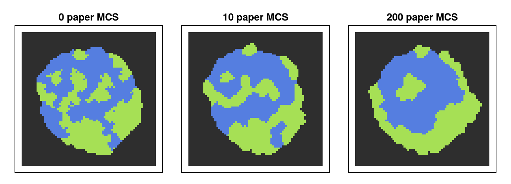
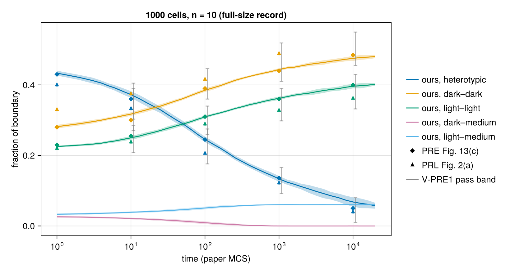
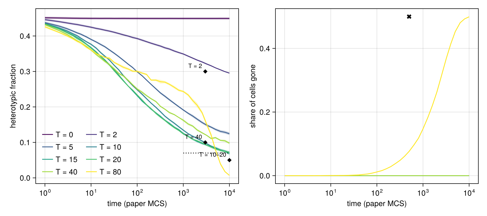
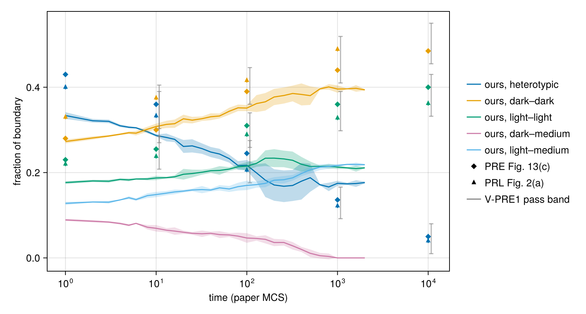

Graner & Glazier (1992): cell sorting by differential adhesion
Mix two kinds of embryonic cells and they sort out: one kind gathers into a core and the other wraps around it. Graner and Glazier showed with a cellular Potts model that differential adhesion alone is enough. From a random mixture of dark and light cells, the heterotypic boundary shrinks roughly logarithmically in time, and the light cells end up enveloping the dark ones (PRL Fig. 2; PRE Figs. 12–13).
- F. Graner, J.A. Glazier, Phys. Rev. Lett. 69, 2013 (1992), doi:10.1103/PhysRevLett.69.2013.
- J.A. Glazier, F. Graner, Phys. Rev. E 47, 2128 (1993), doi:10.1103/PhysRevE.47.2128.
This page builds the model, runs it, and compares runs at the papers' size (1000 cells, to 2×10⁴ paper MCS) with the papers: the sorting time course (PRL Fig. 2; PRE Fig. 13), the engulfment end state, the temperature regimes (PRE Fig. 15), and two contrasting runs: partial sorting (PRE §III E) and symmetric contacts (no sorting). The protocol, every verdict and the provenance are in the collapsed Details section at the end.
using Potts, PottsModels
using MakiePotts, CairoMakie
using Statistics: mean, std, var, cov, cor
using Markdown
using TOML: TOML
CairoMakie.activate!(type = "png")
const FULL = get(ENV, "POTTS_FULL_REPRODUCTION", "false") == "true"
const SEED = 1 # base seed of every ensemble on this page1The model
PRL Eq. (2): a contact energy $J$ for every pair of neighbouring sites in different cells, and an area constraint on every cell (the medium is exempt):
\[H = \sum_{\langle i, j\rangle} J(\tau(\sigma_i), \tau(\sigma_j))\,(1 - \delta_{\sigma_i\sigma_j}) + \lambda \sum_\sigma (a_\sigma - A_{\tau(\sigma)})^2\,\theta(A_{\tau(\sigma)})\]
As a @potts_model, with the papers' values:
@potts_model CellSorting begin
@structural_parameters begin
lattice = (72, 72) # sites; the papers do not state theirs
end
@kinds medium dark light # the first kind is the medium
@parameters begin
λ = 1.0 # area-constraint strength (PRL p.2014)
V₀ = 40.0 # target area A (PRE p.2130)
T = 10.0 # temperature (PRL p.2014)
J[kind, kind] = [0 16 16; 16 2 11; 16 11 14] # medium, dark, light (PRL p.2015)
end
@lattice Lattice(lattice; boundary = Periodic(), neighborhood = Moore(1)) # 8 contact neighbours
@relations proposal = Moore(1) # copy from one of the 8 neighbours (PRE p.2130)
@energy begin
cells(dark, light) => λ * (volume - V₀)^2 # area term; the medium is exempt
contacts => J[kind, kind′] # contact term over unlike neighbouring sites
end
@sweep Metropolis(; temperature = T) # Metropolis acceptance at T (PRE Eq. (3))
endThe contact energies obey the sorting hierarchy of PRL Eq. (3), $J_{dd} < (J_{dd} + J_{ll})/2 < J_{dl} < J_{ll} < J_{dM} = J_{lM}$, so the kinds separate and the light cells engulf the dark ones. PottsModels ships this model as GranerGlazier, which the rest of the page uses. The two give the same run from the same start and seed:
σ_demo, k_demo = graner_glazier_state()
run_of(model) = ownership(solve(PottsProblem(model, [ownership => σ_demo, kind => k_demo], (0, 160); seed = 1),
SequentialCPM(); saveat = 160).u[end])
run_of(CellSorting(; name = :cs)) == run_of(GranerGlazier(; name = :gg_shipped))trueA minimal run
A start, a problem and a solve. graner_glazier_state() is the PRE §II D3 start: 64 cells on 72 × 72, the kinds mixed at random. One paper MCS is 16 of our MCS (PRL p.2014), so this runs to 200 paper MCS. Cells are coloured by kind and the medium is dark grey.
u0_demo = [ownership => σ_demo, kind => k_demo]
demo = solve(PottsProblem(GranerGlazier(; name = :demo), u0_demo, (0, 16 * 200); seed = 1),
SequentialCPM(; proposal = Moore(1)); saveat = 16 .* [0, 10, 200])
fig_demo = Figure(size = (720, 260))
for (j, t) in enumerate((0, 10, 200))
ax_j = Axis(fig_demo[1, j]; title = "$t paper MCS", aspect = DataAspect())
hidedecorations!(ax_j)
pottsplot!(ax_j, renderframe(demo; index = j); encoding = CellTypeEncoding())
end
fig_demo
Results
The figures and verdicts in this section come from the committed full-size records, run offline at the papers' size: 10 replicates of 1000 cells to 2×10⁴ paper MCS (data/09/full-2026-10-05/), and 10 replicates per temperature for PRE Fig. 15 (data/09/vpre7-2026-10-07/). The docs build also runs a reduced ensemble, shown under Details.
Code: the fixture, the records and the papers' values used below
n = FULL ? 10 : 4 # replicates (spec §9.0: 4 smoke, 10 full)
σ_state, k_state = graner_glazier_state()
n_state, dims_state = length(k_state), join(size(σ_state), " × ")
const MARGIN = 60 # medium margin of the full-run aggregates (spec §9.4: 10 let60aggregates touch their periodic image after ≈ 3000 paper MCS)
starts = [FULL ? graner_glazier_aggregate(1000; seed = i, margin = MARGIN) : (σ_state, k_state) for i in 1:n]
σ0, k0 = starts[1]
gg = GranerGlazier(; name = :gg, lattice = size(σ0))
prob0 = PottsProblem(gg, [ownership => σ0, kind => k0], (0, 1); seed = SEED)
J = getp(prob0, :J)(prob0)
par(name) = getp(prob0, name)(prob0)
ncells, ndark, nlight = length(k0), count(==(1), k0), count(==(2), k0)
const PAPER_MCS = 16
const T_FULL = 20_000Cell areas of the starts, for the initial-state row below: the paper-size aggregate is not Potts-relaxed, graner_glazier_state is.
function cell_areas(σ, k) # site count of every cell; 0 for a vanished cell
a = zeros(Int, length(k))
for c in σ
c > 0 && (a[c] += 1)
end
return a
end
big_start = FULL ? starts[1] : graner_glazier_aggregate(1000; seed = 1) # a paper-size start
voronoi_starts = FULL ? starts : [big_start]
sd_voronoi = mean(std(cell_areas(s...)) for s in voronoi_starts)
sd_relaxed = std(cell_areas(σ_state, k_state))
# the same start embedded in a lattice twice as wide (the periodic-boundary variant run under Details)
function padded(σ)
P = zeros(eltype(σ), 2 .* size(σ))
o = size(σ) .÷ 2
P[o[1] .+ (1:size(σ, 1)), o[2] .+ (1:size(σ, 2))] .= σ
return P
end
dims_pad = join(2 .* size(σ0), " × ")
rec_dir = joinpath(pkgdir(PottsModels), "reproductions", "data", "09")
rec_rows(file) = (l = split.(readlines(file), '\t'); [Dict(zip(l[1], r)) for r in l[2:end]])
rec_10k = [parse(Float64, r["largest_dark_cluster"])
for r in rec_rows(joinpath(rec_dir, "full-2026-10-05", "clusters.tsv")) if r["paper_mcs"] == "10000"]
rec_pooled = last(split(read(joinpath(rec_dir, "p6-1g-2026-10-06", "pooled.txt"), String), "## pooled"))
rec_share = match(r"largest@10⁴: mean ([0-9.]+) ± ([0-9.]+)", rec_pooled)
rec_fdl = match(r"F_dl@10⁴: mean ([0-9.]+) ± ([0-9.]+); min ([0-9.]+); ≤ 0.050: (\d+)", rec_pooled)
rec_k = match(r"pooled: k = (\d+)", read(joinpath(rec_dir, "p6-1g-2026-10-06", "pooled.txt"), String))[1]
# the 22 earlier replicates (P6.1f and the D-151 diagnostic) with a largest dark-cluster share
# ≥ 0.90 at 10⁴; for these saves "by 10⁴" and "at 10⁴" coincide (P6.1g record)
rec_22 = match(r"## earlier 22[^\n]*\n(?:[^\n]*\n)*?single by 10⁴: (\d+)/(\d+)",
read(joinpath(rec_dir, "p6-1g-2026-10-06", "pooled.txt"), String))
# total boundary length at paper t = 1 in the FULL record (Moore bonds, each once), for V-PRE4
rec_N1 = mean(parse(Float64, r["mismatched_bonds"])
for r in rec_rows(joinpath(rec_dir, "full-2026-10-05", "timeseries.tsv")) if r["paper_mcs"] == "1")
const AQ = "not asked (on our open question list: README §5, Glazier item 5; Open questions under Details)"
# the V-PRE7 full-size record (D-146; Details, "Temperature regimes")
vpre7_dir = joinpath(rec_dir, "vpre7-2026-10-07")
vpre7 = rec_rows(joinpath(vpre7_dir, "timeseries.tsv"))
vnum(r, key) = parse(Float64, r[key])
vfrac(r, key) = vnum(r, "mismatched_bonds") == 0 ? 0.0 : vnum(r, "F_" * key)
vgone(r) = 1 - (vnum(r, "alive_dark") + vnum(r, "alive_light")) / (vnum(r, "cells_dark") + vnum(r, "cells_light"))
vpre7_T = sort(unique(vnum.(vpre7, "T")))
vpre7_t = sort(unique(Int.(vnum.(vpre7, "paper_mcs"))))
vsel(T, t) = filter(r -> vnum(r, "T") == T && vnum(r, "paper_mcs") == t, vpre7)
vm(f, T, t) = mean(f(r) for r in vsel(T, t))
vse(f, T, t) = (v = [f(r) for r in vsel(T, t)]; std(v) / sqrt(length(v)))
dl_of(r) = vfrac(r, "dl")
vpre7_n = length(vsel(10.0, 1000))
vpre7_late = filter(t -> 1000 <= t <= 10_000, vpre7_t)
# the four criteria (spec §9.1 V-PRE7, verbatim)
v7_d0 = abs(vm(dl_of, 0.0, 2000) - vm(dl_of, 0.0, 100))
v7_o = vm.(dl_of, (2.0, 5.0, 10.0), 1000)
v7_f40 = [vm(dl_of, 40.0, t) for t in vpre7_late]
v7_g80 = vm(vgone, 80.0, 500)
v7_guard = all(r -> r["isolated"] == "true", vpre7)
vpre7_meta = TOML.parsefile(joinpath(vpre7_dir, "provenance.toml"))
# how well the T = 40 bar separates: the same statistic at T = 10
v7_f10 = minimum(vm(dl_of, 10.0, t) for t in vpre7_late)
# T = 40 monolayer: the paper's forms by ≈ 50; ours at the first save with dark–medium < 0.003
dM_of(r) = vfrac(r, "dM")
v7_dM40_50 = vm(dM_of, 40.0, 50)
v7_mono40 = vpre7_t[findfirst(t -> vm(dM_of, 40.0, t) < 0.003, vpre7_t)]
# post-hoc diagnostic after the T = 80 failure (not a verdict; record README): T = 120, 160,
# 240, 5 of the same paired replicates each, to 10³
vdiag = rec_rows(joinpath(vpre7_dir, "diagnostic_timeseries.tsv"))
vd(f, T, t) = mean(f(r) for r in vdiag if vnum(r, "T") == T && vnum(r, "paper_mcs") == t)
r3(x) = round(x; digits = 3)
deviations_md = """
| Item | Ours | Paper | Suspected cause | Author question |
|---|---|---|---|---|
| V-PRE5 one dark cluster @ 10⁴ (**FAIL**; target: ensemble-mean largest share ≥ 0.90; open deviation "late-stage coarsening") | largest dark-cluster share $(round(mean(rec_10k); digits = 3)) ± $(round(std(rec_10k) / sqrt(length(rec_10k)); digits = 3)) (SE, n = $(length(rec_10k)), P6.1f); $(rec_share[1]) ± $(rec_share[2]) (SE) pooled over $rec_k runs (P6.1g); heterotypic at 10⁴ $(rec_fdl[1]) ± $(rec_fdl[2]), minimum $(rec_fdl[3]), ≤ 0.050 in $(rec_fdl[4]) of $rec_k | one dark cluster from ≈ 5000 (PRE Fig. 12(g), p.2140, one run); heterotypic 0.050 (PRE), 0.040 (PRL) at 10⁴ | stochastic late coalescence; paper n = 1; light:dark share unstated. Late sorting in the CPM is diffusion and coalescence of rounded clusters (Durand 2021, PLoS Comput Biol), so the last merges are slow and stochastic: $(rec_22[1]) of $(rec_22[2]) replicates (P6.1f and the D-151 diagnostic) reach a single-cluster share ≥ 0.90 at 10⁴, while the paper shows one run. Temperature and lattice effects act at early times only (Holm et al. 1991, Phys Rev A), and the late rate depends on the type ratio (Franke 2022), which the paper does not state. Temperature is a sensitivity, not an identified cause (T ≥ 14 merges every run by 2×10⁴ but leaves heterotypic at 10⁴ unchanged; the paper states T = 10). Excluded: the periodic image, the start relaxation, the reading time, the type fraction, the cell-size difference, the aggregate size and the seed set (spec §9.5; D-151) | $AQ |
| V-PRE7 T = 80 disintegration (**FAIL**; target: more than half the cells gone by 500; ROADMAP P6.1h) | $(r3(v7_g80)) of the cells gone at 500 and $(r3(vm(vgone, 80.0, 10_000))) at 10⁴, all of them light ($vpre7_n replicates); heterotypic $(r3(vm(dl_of, 80.0, 100))) at 100. The other three V-PRE7 rows pass, but T = 40 does not match the paper's picture: our heterotypic fraction keeps falling ($(r3(vm(dl_of, 40.0, 1000))) at 10³, $(r3(vm(dl_of, 40.0, 10_000))) at 10⁴; T = 10 also clears that row's 0.07 bar, minimum $(r3(v7_f10))), and our light monolayer is late (dark–medium $(r3(v7_dM40_50)) at 50, first below 0.003 at $v7_mono40) | all cells disappear and heterotypic → 0 by ≈ 100 (PRE Fig. 15, p.2144); at T = 40 the monolayer forms by ≈ 50 and heterotypic plateaus near 0.1 | our cells disappear too slowly. The contact temperature scale matches at T = 2 and T = 10 (T = 2 reads $(r3(vm(dl_of, 2.0, 3200))) at 3200 against ≈ 0.3; T = 10 matches V-PRE1 to 10³; T = 15–20 sit in the late-coarsening gap above), so this is not a uniform factor on T. In one exploratory replicate with λ halved at T = 80 (n = 1, start 3001 / seed 13001; review probe, `data/09/vpre7-2026-10-07/review_probe/`, not a verdict), the light-cell loss and the timing of heterotypic → 0 come closer to Fig. 15, but dark cells still survive (309 of 500 at 500). The pattern is consistent with an unstated convention for the area term at a copy or for a cell's last site. The T = 120–240 runs of the record (`diagnostic_timeseries.tsv`) are kept as data. The same deviation is expected to affect V-PRE8 (λ = 0.1: all cells lost by ≈ 800), which is not yet on this page | not asked (proposed for our open question list; Open questions under Details) |
| V-PRE6, V-PRE16 ⟨n⟩ part, V-PRE17 (**PARKED**) | not run | bulk ⟨n⟩ and μ₂ against T (PRE Table II); the generator's ⟨n⟩ plateau (PRE Figs. 4–5); bulk ⟨n⟩ after 2 annealing MCS (PRE Fig. 2) | the rule that makes two cells neighbours when counting n (Tables I–III) is not stated (spec §8.4, §9.1) | $AQ |
| V-PRE8–V-PRE12, V-PRE14, V-PRE15 (pre-registered, not yet on this page) | not run | λ scan (Fig. 16, Table III), checkerboard start (Figs. 7–8), T dependence (Fig. 9, Table I), slow engulfment (Figs. 18–19), J_lM = 30 (Figs. 20–21), dispersal (Fig. 25), J_ld scan (Figs. 26–27) | not built on this page yet; the targets are in the pre-registered table under Details | not an author question |
| Time unit | 1 MCS = N attempts; paper t = our $(PAPER_MCS)t | 1 MCS = 16N attempts (PRL p.2014) | a convention only (INTERNALS F8). Both samplers pick target sites uniformly over the whole lattice, so verdicts are read at the paper's nominal times (spec §8.5) | not an author question |
| Aggregate size | $(n_state) cells on $(dims_state) (`graner_glazier_state`) in the reduced build; $(FULL ? "this run uses" : "the full run uses") `graner_glazier_aggregate(1000)`, one per replicate | ≈ 1000 cells (PRE p.2129) | cost of the docs build. With the small aggregate, boundary fractions scale with perimeter/area and sorting levels off long before 10⁴ paper MCS; the full run tests this deviation | not an author question |
| Log-law window | also reported over 4–512 (an extra row, not a replacement) | 5–4000 paper MCS (spec §9.1 V-PRE1) | the window of `test/papers.jl`, which ends before our small aggregate levels off | not an author question |
| Boundary conditions and lattice size | periodic, $(join(size(σ0), " × "))$(FULL ? ", medium margin $MARGIN sites" : ""); variant: the `lattice` keyword | unstated | unstated in the papers. The aggregate stays clear of its image: no replicate has a save without an all-medium row and column (isolation guard, under Details), and the same starts embedded in a $(dims_pad) lattice give the same bond counts to 10³ (variant run under Details). The first full run (P6.1d) used a margin of 10, chosen by a check that ran only to 10³ (spec §9.1 ruling 3); over 2×10⁴ paper MCS the aggregates drift and deform by ≈ 30 sites, and some touched their image after ≈ 3000 paper MCS, which removed light–medium boundary and failed V-PRE3 (b) (spec §9.4). The margin is now $MARGIN, which dispersal runs need anyway (spec §8.6 D2, §9.1 V-PRE14/15) | $AQ |
| Type fraction | $(FULL ? "equal numbers, randomly placed (`graner_glazier_aggregate`, one draw per replicate)" : "probability ½ per cell (recorded in `data/graner/provenance.toml`)") ($ndark dark / $nlight light) | unstated (spec §8.4) | an assumption; PRE's t = 1 fractions match a dark share of 0.50 (D-151) | $AQ |
| Initial state | $(FULL ? "a round aggregate of $ncells centroidal Voronoi cells, not Potts-relaxed (`graner_glazier_aggregate`)" : "the PRE recipe with $ncells cells (D-049 F-2; `data/graner/generate.jl`); variant `graner_glazier_aggregate(n)`") | square aggregate of staggered bricks relaxed 400 paper MCS (PRE §II D3) | $(FULL ? "paper size. " : "")The paper-size aggregate is not relaxed: its cell-area SD is $(round(sd_voronoi; digits = 1)) sites (mean over the $(length(voronoi_starts)) paper-size start(s) built on this page), against $(round(sd_relaxed; digits = 1)) for the Potts-relaxed `graner_glazier_state`. Heterotypic fractions from a Voronoi and from a relaxed start agree at 1, 10 and 100 paper MCS (D-063; P6.1b2 review), and so does the V-PRE4 boundary drop (spec §9.1 V-PRE4) | not an author question |
| T = 0 annealing | on a copy, $(2PAPER_MCS) of our MCS, the run's J | 2 paper MCS on a copy: "We anneal the displayed data only" (PRE p.2134) | none: matches the paper (spec §8.4 A-GG4, resolved) | not an author question |
| Target area per kind | one `V₀` | one value except the cavity run (PRE Fig. 28) | per-kind targets not expressible yet (spec §8.6 D14) | not an author question |
| Boundary length | mismatched bonds on the 8-neighbour lattice, medium included, each bond once | the same, counting unstated (PRE p.2133); total ≈ 66 850 in PRE Fig. 13(a) | a measurement convention only; it cancels in fractions and in the V-PRE4 ratio D (spec §8.6 D8). The paper's total reads as Moore bonds counted twice, on boundaries about 10 % smoother after its T = 0 anneal: our total at t = 1 is $(round(Int, rec_N1)) (FULL record), so counted twice ≈ $(round(Int, 2rec_N1 / 1000))k against the paper's 66.85k ($(round(66_850 / 2rec_N1; digits = 2))×) | $AQ |
| Two published runs (paper-internal) | the sorting targets use the envelope of both runs, widened by 0.03 (spec §9.1) | PRL Fig. 2 and PRE Fig. 13 use the same parameters but differ: dark–dark at 10 MCS, dd crossing time, light–medium plateau (spec §9.2) | a single paper curve ± 0.05 would fail a model that reproduces the other run (spec §8.5 "Supersession") | $AQ |
| Monolayer time (paper-internal) | read as the two runs; the target is dark–medium < 0.003 by 10³ (V-PRE3 (a)), which both runs meet | light monolayer "after 300 MCS" (PRL p.2015) against "After 600 MCS" (PRE p.2140) | the two published runs differ (spec §8.4, §9.1 V-PRE3 (a)) | $AQ |
| Annealing temperature in PRE Fig. 23 (paper-internal) | T = 0 for the partial-sorting copy too | caption: "two MCS of T = 10 annealing"; the protocol is T = 0 (PRE p.2134) | read as a typo (spec §8.2; §9.1 V-PRE13) | not an author question |
"""
paper_t = [1, 10, 100, 1000, 10_000]
# PRE Fig. 13(c) and PRL Fig. 2(a), 400-dpi reads (spec §8.5 V-PRE1); NaN: off-scale (> 0.5)
paper_pre = Dict(:dl => [0.43, 0.36, 0.245, 0.136, 0.05], :dd => [0.28, 0.30, 0.39, 0.44, 0.485],
:ll => [0.23, 0.255, 0.31, 0.36, 0.40])
paper_prl = Dict(:dl => [0.40, 0.333, 0.206, 0.122, 0.04], :dd => [0.33, 0.375, 0.416, 0.489, NaN],
:ll => [0.22, 0.238, 0.289, 0.328, 0.362])
const READ_ERR = 0.005 # 400-dpi read-off (spec §9.0)
const ENVELOPE_MARGIN = 0.03 # spec §9.1 V-PRE1
const DD_OFFSCALE_HI = 0.55 # spec §9.1: dd at 10⁴ widened to 0.55, the PRL value being off-scale
function envelope(key, j)
a, b = paper_pre[key][j], paper_prl[key][j]
isnan(b) && return (a - ENVELOPE_MARGIN, DD_OFFSCALE_HI)
return (min(a, b) - ENVELOPE_MARGIN, max(a, b) + ENVELOPE_MARGIN)
end
colors = Makie.wong_colors()
names5 = ("heterotypic", "dark–dark", "light–light", "dark–medium", "light–medium")
# the full-size record's time course (mean ± SD over its replicates) against the papers
full_dir = joinpath(rec_dir, "full-2026-10-05")
rec_series = rec_rows(joinpath(full_dir, "timeseries.tsv"))
rec_t = sort(unique(parse.(Int, getindex.(rec_series, "paper_mcs"))))
rec_at(key, t) = [parse(Float64, r["F_" * string(key)]) for r in rec_series if r["paper_mcs"] == string(t)]
rec_n = length(rec_at(:dl, 1))
fig_record = Figure(size = (820, 440))
ax_rec = Axis(fig_record[1, 1]; xscale = log10, xlabel = "time (paper MCS)", ylabel = "fraction of boundary",
title = "1000 cells, n = $rec_n (full-size record)")
for (c, key) in zip(1:5, (:dl, :dd, :ll, :dM, :lM))
μ, sd = [mean(rec_at(key, t)) for t in rec_t], [std(rec_at(key, t)) for t in rec_t]
band!(ax_rec, rec_t, μ .- sd, μ .+ sd; color = (colors[c], 0.25))
lines!(ax_rec, rec_t, μ; color = colors[c])
haskey(paper_pre, key) || continue
js = 2:length(paper_t)
rangebars!(ax_rec, paper_t[js] .* 1.08, first.(envelope.(key, js)), last.(envelope.(key, js));
color = (:gray, 0.6), whiskerwidth = 6)
for (vals, marker) in ((paper_pre[key], :diamond), (paper_prl[key], :utriangle))
ok = .!isnan.(vals)
errorbars!(ax_rec, paper_t[ok], vals[ok], fill(READ_ERR, count(ok)); color = colors[c])
scatter!(ax_rec, paper_t[ok], vals[ok]; color = colors[c], marker)
end
end
Legend(fig_record[1, 2],
[[LineElement(; color = colors[c]) for c in 1:5]; MarkerElement(; marker = :diamond, color = :black);
MarkerElement(; marker = :utriangle, color = :black); LineElement(; color = :gray)],
[collect("ours, " .* names5); "PRE Fig. 13(c)"; "PRL Fig. 2(a)"; "V-PRE1 pass band"]; framevisible = false)
fig7 = Figure(size = (900, 400))
ax7 = Axis(fig7[1, 1]; xscale = log10, xlabel = "time (paper MCS)", ylabel = "heterotypic fraction")
ax7g = Axis(fig7[1, 2]; xscale = log10, xlabel = "time (paper MCS)", ylabel = "share of cells gone")
tcolors = Makie.resample_cmap(:viridis, length(vpre7_T))
for (c, T) in enumerate(vpre7_T)
y, e = [vm(dl_of, T, t) for t in vpre7_t], [vse(dl_of, T, t) for t in vpre7_t]
band!(ax7, vpre7_t, y .- e, y .+ e; color = (tcolors[c], 0.25))
lines!(ax7, vpre7_t, y; color = tcolors[c], label = "T = $(Int(T))")
lines!(ax7g, vpre7_t, [vm(vgone, T, t) for t in vpre7_t]; color = tcolors[c])
end
lines!(ax7, [1000, 10_000], [0.07, 0.07]; color = :black, linestyle = :dot)
scatter!(ax7, [3000, 10_000, 3000], [0.3, 0.05, 0.1]; color = :black, marker = :diamond)
text!(ax7, [3000, 10_000, 3000], [0.3, 0.05, 0.1]; text = ["T = 2", "T = 10–20", "T = 40"],
align = (:right, :bottom), offset = (-6, 4), fontsize = 11)
scatter!(ax7g, [500], [0.5]; color = :black, marker = :xcross, markersize = 12)
axislegend(ax7; position = :lb, framevisible = false, nbanks = 2)
# the verdicts of the full-size records, as written by the runs (D-146)
pipe(s) = replace(s, r"(?<!\\)\|" => "\\|", r"(?<!\\)_" => "\\_") # escape table pipes and underscores
rec_verdicts = [[(; target = r["target"], paper = r["paper"], ours = r["ours"], tol = r["tolerance"],
class = r["class"], result = r["result"]) for r in rec_rows(joinpath(full_dir, "verdicts.tsv"))];
[(; target = "V-PRE7 " * r["criterion"], paper = "PRE Fig. 15", ours = r["ours"], tol = r["rule"],
class = "FULL (record)", result = r["result"]) for r in rec_rows(joinpath(vpre7_dir, "verdicts.tsv"))]]
rec_bind = filter(r -> r.result in ("PASS", "FAIL"), rec_verdicts)
rec_fail = filter(r -> r.result == "FAIL", rec_bind)
headline = ("V-PRE1 heterotypic @ 10000", "V-PRE1 log law, 5–4000", "V-PRE2 dark–dark crosses heterotypic",
"V-PRE2 light–light crosses heterotypic, after dark–dark", "V-PRE3 (a) dark–medium < 0.003",
"V-PRE3 (c) plateau level, size-free R", "V-PRE4 total length drop D",
"V-PRE13 (a) partial sorting: dark–medium @ 10³", "V-GG6 light cells smaller than dark @ 10³",
"NC1 symmetric contacts @ 10³", "V-PRE7 order at 10³")
summary_md = """
**$(count(r -> r.result == "PASS", rec_bind)) of $(length(rec_bind)) binding rows pass; $(length(rec_fail)) fail:**
$(join([r.target for r in rec_fail], "; ")). $(length(rec_verdicts) - length(rec_bind)) more rows are reported
without a verdict. Headline rows and every failure (all rows are under Details):
| Target | Paper | Ours (full-size record) | Rule | Result |
|---|---|---|---|---|
""" * join(["| $(r.target) | $(pipe(r.paper)) | $(pipe(r.ours)) | $(pipe(r.tol)) | **$(r.result)** |"
for r in rec_verdicts if r.target in headline || r.result == "FAIL"], "\n")Sorting against the papers
Boundary fractions of the full-size record (mean ± SD over its replicates), against PRE Fig. 13(c) (diamonds) and PRL Fig. 2(a) (triangles), read from 400-dpi renders (± 0.005, drawn as bars). Grey bars are the V-PRE1 pass bands: the envelope of the two published runs widened by 0.03.

Heterotypic fraction against time at each temperature (left; the dotted line is the T = 40 bar of 0.07 over [10³, 10⁴]), and the share of cells gone (right; the cross marks the T = 80 bar, half the cells by 500). The paper's points are the values of PRE p.2144 and Fig. 15(a, b), read at 110 dpi (spec §9.1): T = 2 ≈ 0.3 at 3×10³, T = 10–20 ≈ 0.05 at 10⁴, T = 40 ≈ 0.1 on its plateau. The paper's T = 80 curve reaches 0 by ≈ 100.

The full run as a video
Replicate 1 of the full-size record: 1000 cells, 100 log-spaced frames to 2×10⁴ paper MCS, one colour per kind, no cell outlines. Compare PRL Fig. 1 and PRE Fig. 12: small same-kind clusters, merging clusters by 100, light cells at the surface, and coarsening dark domains.
Release assets: the full run's replicate 1 and the eight temperatures of PRE Fig. 15.
Verdicts
35 of 37 binding rows pass; 2 fail: V-PRE5 one dark cluster @ 10⁴; V-PRE7 T = 80 disintegration. 3 more rows are reported without a verdict. Headline rows and every failure (all rows are under Details):
| Target | Paper | Ours (full-size record) | Rule | Result |
|---|---|---|---|---|
| V-PRE1 heterotypic @ 10000 | PRE 0.05, PRL 0.04 | 0.068 ± 0.013 | [0.01, 0.08] | PASS |
| V-PRE1 log law, 5–4000 | linear in log₁₀ t; slope ≈ −0.11 (PRE), ≈ −0.105 (PRL) per decade (spec §9.1) | R² = 0.992, slope -0.114 | R² > 0.95, slope in [−0.15, −0.07] | PASS |
| V-PRE2 dark–dark crosses heterotypic | ≈ 18 (PRE), ≈ 5 (PRL) | 25 | [2.5, 40] | PASS |
| V-PRE2 light–light crosses heterotypic, after dark–dark | ≈ 49 (PRE), ≈ 38 (PRL) | 64; ll/dd crossing ratio 2.56 | [19, 100]; dd first | PASS |
| V-PRE3 (a) dark–medium < 0.003 | 0.0026 at 200 (PRE); 0 by 300 (PRL) | 320 | by 10³ | PASS |
| V-PRE3 (c) plateau level, size-free R | 0.0628 / 0.0635 = 0.989 (PRE Fig. 13(b)); ≈ 0.99 (PRL) | R = 0.06 / 0.059 = 1.014 | [0.85, 1.10] | PASS |
| V-PRE4 total length drop D | 0.014 (PRE Fig. 13(a)) | 0.021 ± 0.003 | [0.005, 0.03] | PASS |
| V-PRE5 one dark cluster @ 10⁴ | a single dark cluster at 13 500 (PRE Fig. 12(h)) | largest 0.815; dark–medium 0.0 | largest ≥ 0.90; dark–medium < 0.001 | FAIL |
| V-PRE13 (a) partial sorting: dark–medium @ 10³ | 0.019 (PRE Fig. 23(b), dark–medium bullets; replotted in Fig. 24(b)) | 0.022 | > 0.01 | PASS |
| V-GG6 light cells smaller than dark @ 10³ | "slightly smaller" (PRL p.2014) | Δa = -2.876 ± 0.035 (SE); NC1 -0.03 | Δa < 0, |Δa| > 2 SE; |NC1| < ½ |Δa| | PASS |
| NC1 symmetric contacts @ 10³ | — (control; random mixing gives a cell–cell heterotypic share ≈ ½, spec §9.1) | cell–cell heterotypic share 0.495; dark–medium 0.03; engulfed 0 of 10 | share ≥ 0.40; dark–medium ≥ 0.01; 0 engulfed | PASS |
| V-PRE7 order at 10³ | PRE Fig. 15 | F_dl(T=2) 0.3492, F_dl(T=5) 0.1914, F_dl(T=10) 0.1346 | F_dl(T=2) > F_dl(T=5) > F_dl(T=10) | PASS |
| V-PRE7 T = 80 disintegration | PRE Fig. 15 | share of cells gone at 500 = 0.0763 | > 0.5 | FAIL |
Deviations
One row per failed, parked or provisional target and per difference from the papers (D-154). The columns are our value, the paper's value, the suspected cause and the status of the question to the authors: "not an author question", "not asked" (the question is on our open question list, model-specs README §5, and Open questions under Details), "asked on ⟨date⟩" or "answered → ⟨D-entry⟩". There is no released code for either paper. Our values for the late-coarsening row are read from the committed full-run records (D-146): P6.1f (data/09/full-2026-10-05/) and the P6.1g coarsening pass (data/09/p6-1g-2026-10-06/).
| Item | Ours | Paper | Suspected cause | Author question |
|---|---|---|---|---|
| V-PRE5 one dark cluster @ 10⁴ (FAIL; target: ensemble-mean largest share ≥ 0.90; open deviation "late-stage coarsening") | largest dark-cluster share 0.815 ± 0.06 (SE, n = 10, P6.1f); 0.816 ± 0.022 (SE) pooled over 72 runs (P6.1g); heterotypic at 10⁴ 0.0712 ± 0.0013, minimum 0.0471, ≤ 0.050 in 2 of 72 | one dark cluster from ≈ 5000 (PRE Fig. 12(g), p.2140, one run); heterotypic 0.050 (PRE), 0.040 (PRL) at 10⁴ | stochastic late coalescence; paper n = 1; light:dark share unstated. Late sorting in the CPM is diffusion and coalescence of rounded clusters (Durand 2021, PLoS Comput Biol), so the last merges are slow and stochastic: 8 of 22 replicates (P6.1f and the D-151 diagnostic) reach a single-cluster share ≥ 0.90 at 10⁴, while the paper shows one run. Temperature and lattice effects act at early times only (Holm et al. 1991, Phys Rev A), and the late rate depends on the type ratio (Franke 2022), which the paper does not state. Temperature is a sensitivity, not an identified cause (T ≥ 14 merges every run by 2×10⁴ but leaves heterotypic at 10⁴ unchanged; the paper states T = 10). Excluded: the periodic image, the start relaxation, the reading time, the type fraction, the cell-size difference, the aggregate size and the seed set (spec §9.5; D-151) | not asked (on our open question list: README §5, Glazier item 5; Open questions under Details) |
| V-PRE7 T = 80 disintegration (FAIL; target: more than half the cells gone by 500; ROADMAP P6.1h) | 0.076 of the cells gone at 500 and 0.499 at 10⁴, all of them light (10 replicates); heterotypic 0.3 at 100. The other three V-PRE7 rows pass, but T = 40 does not match the paper's picture: our heterotypic fraction keeps falling (0.162 at 10³, 0.098 at 10⁴; T = 10 also clears that row's 0.07 bar, minimum 0.072), and our light monolayer is late (dark–medium 0.011 at 50, first below 0.003 at 500) | all cells disappear and heterotypic → 0 by ≈ 100 (PRE Fig. 15, p.2144); at T = 40 the monolayer forms by ≈ 50 and heterotypic plateaus near 0.1 | our cells disappear too slowly. The contact temperature scale matches at T = 2 and T = 10 (T = 2 reads 0.321 at 3200 against ≈ 0.3; T = 10 matches V-PRE1 to 10³; T = 15–20 sit in the late-coarsening gap above), so this is not a uniform factor on T. In one exploratory replicate with λ halved at T = 80 (n = 1, start 3001 / seed 13001; review probe, data/09/vpre7-2026-10-07/review_probe/, not a verdict), the light-cell loss and the timing of heterotypic → 0 come closer to Fig. 15, but dark cells still survive (309 of 500 at 500). The pattern is consistent with an unstated convention for the area term at a copy or for a cell's last site. The T = 120–240 runs of the record (diagnostic_timeseries.tsv) are kept as data. The same deviation is expected to affect V-PRE8 (λ = 0.1: all cells lost by ≈ 800), which is not yet on this page | not asked (proposed for our open question list; Open questions under Details) |
| V-PRE6, V-PRE16 ⟨n⟩ part, V-PRE17 (PARKED) | not run | bulk ⟨n⟩ and μ₂ against T (PRE Table II); the generator's ⟨n⟩ plateau (PRE Figs. 4–5); bulk ⟨n⟩ after 2 annealing MCS (PRE Fig. 2) | the rule that makes two cells neighbours when counting n (Tables I–III) is not stated (spec §8.4, §9.1) | not asked (on our open question list: README §5, Glazier item 5; Open questions under Details) |
| V-PRE8–V-PRE12, V-PRE14, V-PRE15 (pre-registered, not yet on this page) | not run | λ scan (Fig. 16, Table III), checkerboard start (Figs. 7–8), T dependence (Fig. 9, Table I), slow engulfment (Figs. 18–19), JlM = 30 (Figs. 20–21), dispersal (Fig. 25), Jld scan (Figs. 26–27) | not built on this page yet; the targets are in the pre-registered table under Details | not an author question |
| Time unit | 1 MCS = N attempts; paper t = our 16t | 1 MCS = 16N attempts (PRL p.2014) | a convention only (INTERNALS F8). Both samplers pick target sites uniformly over the whole lattice, so verdicts are read at the paper's nominal times (spec §8.5) | not an author question |
| Aggregate size | 64 cells on 72 × 72 (graner_glazier_state) in the reduced build; the full run uses graner_glazier_aggregate(1000), one per replicate | ≈ 1000 cells (PRE p.2129) | cost of the docs build. With the small aggregate, boundary fractions scale with perimeter/area and sorting levels off long before 10⁴ paper MCS; the full run tests this deviation | not an author question |
| Log-law window | also reported over 4–512 (an extra row, not a replacement) | 5–4000 paper MCS (spec §9.1 V-PRE1) | the window of test/papers.jl, which ends before our small aggregate levels off | not an author question |
| Boundary conditions and lattice size | periodic, 72 × 72; variant: the lattice keyword | unstated | unstated in the papers. The aggregate stays clear of its image: no replicate has a save without an all-medium row and column (isolation guard, under Details), and the same starts embedded in a 144 × 144 lattice give the same bond counts to 10³ (variant run under Details). The first full run (P6.1d) used a margin of 10, chosen by a check that ran only to 10³ (spec §9.1 ruling 3); over 2×10⁴ paper MCS the aggregates drift and deform by ≈ 30 sites, and some touched their image after ≈ 3000 paper MCS, which removed light–medium boundary and failed V-PRE3 (b) (spec §9.4). The margin is now 60, which dispersal runs need anyway (spec §8.6 D2, §9.1 V-PRE14/15) | not asked (on our open question list: README §5, Glazier item 5; Open questions under Details) |
| Type fraction | probability ½ per cell (recorded in data/graner/provenance.toml) (33 dark / 31 light) | unstated (spec §8.4) | an assumption; PRE's t = 1 fractions match a dark share of 0.50 (D-151) | not asked (on our open question list: README §5, Glazier item 5; Open questions under Details) |
| Initial state | the PRE recipe with 64 cells (D-049 F-2; data/graner/generate.jl); variant graner_glazier_aggregate(n) | square aggregate of staggered bricks relaxed 400 paper MCS (PRE §II D3) | The paper-size aggregate is not relaxed: its cell-area SD is 7.6 sites (mean over the 1 paper-size start(s) built on this page), against 1.8 for the Potts-relaxed graner_glazier_state. Heterotypic fractions from a Voronoi and from a relaxed start agree at 1, 10 and 100 paper MCS (D-063; P6.1b2 review), and so does the V-PRE4 boundary drop (spec §9.1 V-PRE4) | not an author question |
| T = 0 annealing | on a copy, 32 of our MCS, the run's J | 2 paper MCS on a copy: "We anneal the displayed data only" (PRE p.2134) | none: matches the paper (spec §8.4 A-GG4, resolved) | not an author question |
| Target area per kind | one V₀ | one value except the cavity run (PRE Fig. 28) | per-kind targets not expressible yet (spec §8.6 D14) | not an author question |
| Boundary length | mismatched bonds on the 8-neighbour lattice, medium included, each bond once | the same, counting unstated (PRE p.2133); total ≈ 66 850 in PRE Fig. 13(a) | a measurement convention only; it cancels in fractions and in the V-PRE4 ratio D (spec §8.6 D8). The paper's total reads as Moore bonds counted twice, on boundaries about 10 % smoother after its T = 0 anneal: our total at t = 1 is 37035 (FULL record), so counted twice ≈ 74k against the paper's 66.85k (0.9×) | not asked (on our open question list: README §5, Glazier item 5; Open questions under Details) |
| Two published runs (paper-internal) | the sorting targets use the envelope of both runs, widened by 0.03 (spec §9.1) | PRL Fig. 2 and PRE Fig. 13 use the same parameters but differ: dark–dark at 10 MCS, dd crossing time, light–medium plateau (spec §9.2) | a single paper curve ± 0.05 would fail a model that reproduces the other run (spec §8.5 "Supersession") | not asked (on our open question list: README §5, Glazier item 5; Open questions under Details) |
| Monolayer time (paper-internal) | read as the two runs; the target is dark–medium < 0.003 by 10³ (V-PRE3 (a)), which both runs meet | light monolayer "after 300 MCS" (PRL p.2015) against "After 600 MCS" (PRE p.2140) | the two published runs differ (spec §8.4, §9.1 V-PRE3 (a)) | not asked (on our open question list: README §5, Glazier item 5; Open questions under Details) |
| Annealing temperature in PRE Fig. 23 (paper-internal) | T = 0 for the partial-sorting copy too | caption: "two MCS of T = 10 annealing"; the protocol is T = 0 (PRE p.2134) | read as a typo (spec §8.2; §9.1 V-PRE13) | not an author question |
Details
Protocol, full verdict lists and provenance
Sources
- F. Graner, J.A. Glazier, "Simulation of Biological Cell Sorting Using a Two-Dimensional Extended Potts Model", Phys. Rev. Lett. 69, 2013 (1992). doi:10.1103/PhysRevLett.69.2013. Read in the version of record (OCR text layer; equations read from the page images).
- J.A. Glazier, F. Graner, "Simulation of the differential adhesion driven rearrangement of biological cells", Phys. Rev. E 47, 2128 (1993). doi:10.1103/PhysRevE.47.2128. Read in the version of record. It gives the initial-condition recipe (§II D3), the measurement protocol (§II D1) and the full sorting run (§III B, Fig. 13).
- Erratum status: the spec records no erratum for either paper. We have not checked the APS erratum listings.
- Released code: none.
- Spec:
docs/design/research/model-specs/09_cell_sorting.md(§2.1, §3.1, §8.4, §8.5, and the pre-registration audit §9). The Osborne et al. (2017) Potts benchmark in the same spec is retired: cell sorting is reproduced from Graner–Glazier only (D-156). - Reproducibility grade: B. Energies, λ, T, the time unit and the initial-state recipe are stated. Lattice size, boundary conditions and the type fraction are not (spec §8.4).
Builds
Every number about our runs is computed on this page when the docs are built, or read from a committed record. Values quoted from the papers carry a citation.
The docs build runs a reduced ensemble (POTTS_FULL_REPRODUCTION unset), so the tables below are a smoke check, not validation. The full run (POTTS_FULL_REPRODUCTION=true) raises the replicate count and the run length, and replaces the small aggregate of graner_glazier_state with a paper-size one of 1000 cells per replicate (graner_glazier_aggregate(1000; seed = replicate)), so the differences that come from aggregate size (deviations table) can be tested there. The committed full-run record is lib/PottsModels/reproductions/data/09/full-2026-10-05/ (P6.1f, D-144: verdicts, time series, provenance), with the late-coarsening pass in data/09/p6-1g-2026-10-06/ (D-151). The full run's replicate-1 video is the release asset 09_cell_sorting_full-2026-10-05_replicate1.mp4. The temperature-regime record (V-PRE7) is data/09/vpre7-2026-10-07/; its video of replicate 1 at the eight temperatures is the release asset 09_cell_sorting_vpre7-2026-10-07_temperatures.mp4.
The model, term by term
PRL Eq. (2), p.2014 (also PRE Eq. (2), p.2129):
\[H = \sum_{\langle i, j\rangle} J(\tau(\sigma_i), \tau(\sigma_j))\,(1 - \delta_{\sigma_i\sigma_j}) + \lambda \sum_\sigma (a_\sigma - A_{\tau(\sigma)})^2\,\theta(A_{\tau(\sigma)})\]
| Paper | GranerGlazier statement |
|---|---|
| contact term over the next-nearest-neighbour (8) set (PRL p.2014; PRE p.2129) | contacts => J[kind, kind′] on Lattice(...; neighborhood = Moore(1)) |
| area term, medium exempt through $\theta(A_M < 0)$ (PRE p.2130) | cells(dark, light) => λ * (volume - V₀)^2 |
| copy from "one of the eight neighboring sites" (PRE p.2130) | @relations proposal = Moore(1) |
| Metropolis at temperature T, Eq. (3) (PRE p.2130) | @sweep Metropolis(; temperature = T) |
The starts: the reduced build shares the 64-cell graner_glazier_state between its replicates; the full build gives replicate i its own paper-size aggregate graner_glazier_aggregate(1000; seed = i, margin = MARGIN), so the kind assignments are independent (spec §9.0). The fixture code is under Results.
Markdown.parse("""
| Symbol | Value | Units | Meaning | Source | Status |
|---|---|---|---|---|---|
| J(d,d) | $(J[2, 2]) | energy | dark–dark contact | PRL p.2015 | stated |
| J(d,l) | $(J[2, 3]) | energy | dark–light contact | PRL p.2015 | stated |
| J(l,l) | $(J[3, 3]) | energy | light–light contact | PRL p.2015 | stated |
| J(d,M) = J(l,M) | $(J[1, 2]) | energy | cell–medium contact | PRL p.2015 | stated |
| λ | $(par(:λ)) | energy / site² | area-constraint strength | PRL p.2014 | stated |
| A(d) = A(l) | $(par(:V₀)) | sites | target area | PRL p.2015; PRE p.2130, p.2151 | stated (PRE) |
| T | $(par(:T)) | energy (k = 1) | temperature | PRL p.2014 | stated |
| lattice | $(join(size(σ0), " × ")), periodic | sites | domain | — | our choice (unstated) |
| cells | $ncells ($ndark dark, $nlight light) | — | initial aggregate | $(FULL ? "`graner_glazier_aggregate`; PRE p.2129 ≈ 1000" : "PRE §II D3 recipe") | derived |
""")| Symbol | Value | Units | Meaning | Source | Status |
|---|---|---|---|---|---|
| J(d,d) | 2.0 | energy | dark–dark contact | PRL p.2015 | stated |
| J(d,l) | 11.0 | energy | dark–light contact | PRL p.2015 | stated |
| J(l,l) | 14.0 | energy | light–light contact | PRL p.2015 | stated |
| J(d,M) = J(l,M) | 16.0 | energy | cell–medium contact | PRL p.2015 | stated |
| λ | 1.0 | energy / site² | area-constraint strength | PRL p.2014 | stated |
| A(d) = A(l) | 40.0 | sites | target area | PRL p.2015; PRE p.2130, p.2151 | stated (PRE) |
| T | 10.0 | energy (k = 1) | temperature | PRL p.2014 | stated |
| lattice | 72 × 72, periodic | sites | domain | — | our choice (unstated) |
| cells | 64 (33 dark, 31 light) | — | initial aggregate | PRE §II D3 recipe | derived |
Units. Lengths are lattice sites. One of our MCS is N copy attempts, N the number of lattice sites (medium included). The paper's MCS is 16N attempts (PRL p.2014), so one paper MCS is 16 of ours. All times on this page are paper MCS. The full build runs to 2×10⁴ paper MCS (spec §9.0).
Build and run
One replicate to 10³ paper MCS, sequential CPU solver, timed after a warm-up solve. Every timing on this page names the machine and backend that produced it.
alg = SequentialCPM(; proposal = Moore(1))
const MACHINE = "$(strip(Sys.cpu_info()[1].model)) ($(Sys.MACHINE)), CPU backend, one thread"
prob = remake(prob0; tspan = (0, PAPER_MCS * 1000))
solve(remake(prob; tspan = (0, PAPER_MCS)), alg) # warm-up (compilation)
t_one = @elapsed solve(prob, alg)
Markdown.parse("One replicate ($ncells cells), 10³ paper MCS, compiled: " *
"**$(round(t_one; digits = 1)) s** on $MACHINE." *
(FULL ? "" : " In the reduced build this is the $ncells-cell aggregate, so this is not the " *
"paper-size cost; the full build times the 1000-cell aggregate."))One replicate (64 cells), 10³ paper MCS, compiled: 2.4 s on AMD RYZEN AI MAX+ 395 w/ Radeon 8060S (x86_64-linux-gnu), CPU backend, one thread. In the reduced build this is the 64-cell aggregate, so this is not the paper-size cost; the full build times the 1000-cell aggregate.
The paper-size cost. The reduced build times about 10 paper MCS of graner_glazier_aggregate(1000); the full build reads it off the run above.
t_per_mcs = if FULL
t_one / 1000
else
prob_big = PottsProblem(GranerGlazier(; name = :gg1000, lattice = size(big_start[1])),
[ownership => big_start[1], kind => big_start[2]], (0, PAPER_MCS); seed = 1)
solve(prob_big, alg) # warm-up (compilation)
(@elapsed solve(remake(prob_big; tspan = (0, 10PAPER_MCS)), alg)) / 10
end
Markdown.parse("Paper size ($(length(big_start[2])) cells on $(join(size(big_start[1]), " × "))): " *
"**$(round(t_per_mcs; digits = 3)) s per paper MCS**, so one full-run replicate " *
"($T_FULL paper MCS) takes about $(round(t_per_mcs * T_FULL / 3600; digits = 1)) h; measured on $MACHINE.")Paper size (1000 cells on 347 × 347): 0.046 s per paper MCS, so one full-run replicate (20000 paper MCS) takes about 0.3 h; measured on AMD RYZEN AI MAX+ 395 w/ Radeon 8060S (x86_64-linux-gnu), CPU backend, one thread.
A variant is ordinary model code, here a parameter remake. The partial-sorting regime of PRE §III E swaps J(d,l) and J(l,l) and lowers T:
prob_partial = remake(prob; p = [:J => [0 16 16; 16 2 14; 16 14 11], :T => 5.0])Measurement (PRE §II D1)
Fractional boundary length is the number of mismatched Moore bonds between two kinds, divided by all mismatched bonds (medium included). It is measured on a copy annealed for 2 paper MCS at T = 0 with the run's own contact energies. The definitions follow lib/PottsModels/test/papers.jl and spec §9.0.
planned: a graner_glazier_observables(sol) (feature G12, observables library) will replace these helpers.
function bond_counts(σ, k)
n = Dict(:dd => 0, :ll => 0, :dl => 0, :dM => 0, :lM => 0)
nx, ny = size(σ)
for y in 1:ny, x in 1:nx, (dx, dy) in ((1, 0), (0, 1), (1, 1), (1, -1))
a = σ[x, y]
b = σ[mod1(x + dx, nx), mod1(y + dy, ny)]
a == b && continue
a == 0 && ((a, b) = (b, a))
key = b == 0 ? (k[a] == 1 ? :dM : :lM) : k[a] == k[b] ? (k[a] == 1 ? :dd : :ll) : :dl
n[key] += 1
end
return n
end
# anneal a copy at T = 0 with the energies of the run `run` (a PottsProblem). A problem's
# cells are the labels 1:maximum(σ), so the kinds of vanished cells above the largest label
# left are dropped; with no cell left there is nothing to anneal
function annealed(σ, k, run; seed = 1)
top = maximum(σ)
top == 0 && return copy(σ)
q = PottsProblem(GranerGlazier(; name = :anneal, lattice = size(σ)),
[ownership => copy(σ), kind => k[1:top], :J => getp(run, :J)(run), :λ => getp(run, :λ)(run),
:V₀ => getp(run, :V₀)(run), :T => 0.0], (0, 2PAPER_MCS); seed)
return ownership(solve(q, SequentialCPM(); saveat = 2PAPER_MCS).u[end])
end
function fractions(σ, k, run)
n = bond_counts(annealed(σ, k, run), k)
total = sum(values(n))
return Dict(key => v / total for (key, v) in n)
end
function radius_ratio(σ, k) # mean distance to the aggregate centroid, dark / light
sites = findall(!=(0), σ)
c = (mean(i[1] for i in sites), mean(i[2] for i in sites))
r(kk) = mean(hypot(i[1] - c[1], i[2] - c[2]) for i in sites if k[σ[i]] == kk)
return r(1) / r(2)
end
# engulfment as in `papers.jl`: dark–medium boundary below 0.003, dark cells nearer the centre
engulfed(σ, k, run) = fractions(σ, k, run)[:dM] < 0.003 && radius_ratio(σ, k) < 0.75
# dark clusters (spec §9.0): connected components of the dark cells, two cells adjacent
# when they share a Moore bond; returns the count and the largest one's share of dark cells
function root!(parent, c)
while parent[c] != c
parent[c] = parent[parent[c]]
c = parent[c]
end
return c
end
function dark_clusters(σ, k)
parent = collect(eachindex(k))
nx, ny = size(σ)
for y in 1:ny, x in 1:nx, (dx, dy) in ((1, 0), (0, 1), (1, 1), (1, -1))
a, b = σ[x, y], σ[mod1(x + dx, nx), mod1(y + dy, ny)]
(a == b || a == 0 || b == 0 || k[a] != 1 || k[b] != 1) && continue
parent[root!(parent, a)] = root!(parent, b)
end
a = cell_areas(σ, k)
size_of = Dict{Int, Int}()
for c in eachindex(k)
(k[c] == 1 && a[c] > 0) || continue
r = root!(parent, c)
size_of[r] = get(size_of, r, 0) + 1
end
return length(size_of), maximum(values(size_of)) / sum(values(size_of))
endValidation
Pre-registered targets
The targets are copied from spec §9.1, which folds V-GG1–V-GG4 into V-PRE1–V-PRE3 as a second paper run. Verdict classes (spec §9.0): SMOKE+FULL rows are size-free and binding in both builds; FULL rows are paper comparisons with a verdict only in the full run, reported as information here. Times are paper MCS; fractions are of all mismatched bonds on the annealed copy. NC1 is the symmetric-contact control, J = [0 16 16; 16 11 11; 16 11 11]. Rules marked "verbatim" are copied from §9.1; the others are abridged, and for every row §9.1 is the binding text.
| Target | Source | Pass rule (spec §9.1) | Class | Status (spec §9.1) | On this page |
|---|---|---|---|---|---|
| V-GG1–V-GG4 | PRL Fig. 2, p.2015–2016 | — (enter V-PRE1–V-PRE3 as the second run) | — | superseded | as PRL markers and envelope |
| V-GG5 | PRL Fig. 1 | — (covered by V-PRE5) | — | superseded | — |
| V-GG6 | PRL p.2014 | per replicate Δa = ⟨a_l⟩ − ⟨a_d⟩ on the raw state at 10³; mean Δa < 0 and |mean Δa| > 2 SE; NC1 |mean Δa| < ½ |mean Δa| | SMOKE+FULL | fix applied | computed |
| V-PRE1 dl, dd, ll | PRE Fig. 13(c); PRL Fig. 2(a) | mean at 10, 100, 10³, 10⁴ inside the two-run envelope ± 0.03 | FULL | fix applied | computed (10⁴ in the full run) |
| V-PRE1 log law | PRL Fig. 2 caption; PRE Fig. 13(c) | fit of mean F_dl on log₁₀ t over [5, 4000]: R² > 0.95, slope in [−0.15, −0.07] per decade | FULL | fix applied | computed |
| V-PRE2 | PRE Fig. 13(c); PRL Fig. 2(a); PRE p.2140 | dd crossing in [2.5, 40]; ll crossing in [19, 100]; dd first; dd + ll > dl at every save; NC1: no dd or ll crossing by 10³ | FULL | fix applied | computed |
| V-PRE3 (a) | PRE Fig. 13(b); PRL Fig. 2(b) | FULL: first save with mean F_dM < 0.003 is ≤ 10³. Size-free form (ruling of 2026-09-30), reported only: first save with mean F_dM(t) / mean F_dM(1) < 0.1; it was to bind the reduced build if 20 calibration seeds reached it by the 500 save, and they did not (P6.1c), so (a) is FULL-only. Both builds, NC1: mean F_dM(10³) ≥ 0.01 | FULL; NC1 clause SMOKE+FULL | ready | computed |
| V-PRE3 (b) | same | plateau t_p ≤ 10³ and last-decade log-slope of F_lM within ± 5% of its last value | FULL | ready | computed |
| V-PRE3 (c) | same; spec §8.5 | R = F_lM(10³) / [F_dM(1) + F_lM(1)] in [0.85, 1.10] | FULL | fix applied | computed |
| V-PRE3 (d) | same | raw F_lM(10³) in [0.050, 0.075] | FULL | ready | computed |
| V-PRE4 | PRE Fig. 13(a) | D = [N_mm(1) − mean N_mm over [100, 10³]] / N_mm(1) in [0.005, 0.03]; |log-slope of N_mm over [10³, 10⁴]| ≤ 0.005 N_mm(10³) per decade | FULL | fix applied | computed; start check in the full run |
| V-PRE5 | PRE Fig. 12 | mean dark-cluster count non-increasing over 10, 100, 10³, 10⁴; largest dark cluster ≥ 90% of dark cells at 10⁴; mean F_dM(10⁴) < 0.001 | FULL | fix applied | computed (10⁴ in the full run) |
| V-PRE6 | PRE Table II | bulk ⟨n⟩, μ₂ against T | — | parked (neighbour rule for n undefined) | — |
| V-PRE7 | PRE Fig. 15 | T = 0: |F_dl(2000) − F_dl(100)| < 0.02. Order at 10³: F_dl(T=2) > F_dl(T=5) > F_dl(T=10). T = 40: F_dl > 0.07 at every save in [10³, 10⁴]. T = 80: > 50% of cells gone (volume 0) by 500 (verbatim) | FULL + T scan | ready | computed from the committed full-size record (data/09/vpre7-2026-10-07/, 10 per T); smoke scan in the reduced build |
| V-PRE8 | PRE Fig. 16, Table III | λ = 0.1: 0 cells alive. λ = 0.2: 0 light, ≥ 90% dark alive. λ = 0.5: ≥ 90% light alive. λ ≥ 1: all alive. t*(λ = 10) / t*(λ = 0.5) ∈ [3, 30] (verbatim) | FULL + λ scan | fix applied | not yet on this page |
| V-PRE9 | PRE Figs. 7–8 | checkerboard: mean F_dl(10³) ≥ 0.72 and log-slope of F_dl over [10, 2000] > 0; F_ll(10³), F_dd(10³) ≤ 0.12 (verbatim) | FULL | ready | not yet on this page |
| V-PRE10 | PRE Fig. 9, Table I | T = 0: |F_dl(2000) − F_dl(100)| < 0.02; F_dl(2000) at T = 15 and T = 40 < F_dl(2000) at T = 10 (verbatim) | FULL + T scan | fix applied | not yet on this page |
| V-PRE11 | PRE Figs. 18–19 | mean F_dM(10³) > 0.005 and decreasing across saves 10², 10³, 10⁴; log-slope of F_dM over [10³, 10⁴] < log-slope over [10², 10³] (accelerating on log axes); a linear-in-t fit of F_dM over [2000, 10⁴] reaches 0 at t ∈ [5×10³, 3×10⁴] (verbatim) | FULL | fix applied | not yet on this page |
| V-PRE12 | PRE Figs. 20–21 | J_lM = 30: F_lM < 0.005 from 200; F_dl within ± 0.05 of 0.38, 0.25, 0.13 at 10, 100, 10³ | FULL | fix applied | not yet on this page |
| V-PRE13 (a) | PRE Fig. 23(b), replotted in Fig. 24(b) | partial sorting: mean F_dM(10³) > 0.01 | SMOKE+FULL | fix applied | computed |
| V-PRE13 (b) | PRE Fig. 23(a) | partial sorting: mean F_dl within ± 0.05 of 0.325, 0.245, 0.17 at 10, 100, 10³ | FULL | fix applied | computed |
| V-PRE14 | PRE Fig. 25 | dispersal (J_lM = 2, J_dd = 4, T = 5), unannealed: > 20% of light cells outside the largest component at 480 | FULL, margin ≥ 60 (graner_glazier_aggregate(n; margin)) | ready | not yet on this page |
| V-PRE15 | PRE Figs. 26–27 | J_ld = 35: ≥ 2 components of ≥ 10% of cells; J_ld = 29: largest ≥ 95%, at 2000 | FULL, larger margin | fix applied | not yet on this page |
| V-PRE16 | PRE Figs. 4–5 | generator plateau: |mean of the last 4 saves − mean of the first 4| ≤ 2% of the window mean, over the last 100 of 400 MCS, for F_lM and N_mm on a 10-MCS T = 0 annealed copy (ruling of 2026-09-30; ⟨n⟩ part parked) | generator | ready (plateau) / parked (⟨n⟩) | generator: checked when data/graner/generate.jl regenerates the start, not in CI |
| V-PRE17 | PRE Fig. 2 | bulk ⟨n⟩ after 2 annealing MCS | — | parked | — |
| V-OS1–V-OS5 | Osborne et al. (2017) | — | — | retired (D-156: cell sorting is Graner–Glazier only) | — |
| NC1 | D-048 | at 10³: mean of F_dl / (1 − F_dM − F_lM) ≥ 0.40 (size-free heterotypic share of cell–cell bonds; ruling of 2026-09-30, calibrated on seeds 7001–7024 in P6.1c); mean F_dM ≥ 0.01; 0 of n engulfed. The old raw F_dl ≥ 0.35 is reported only | SMOKE+FULL | fix applied | computed |
# pre-registration status of this page, read from git and the frozen-test list
page = joinpath(pkgdir(PottsModels), "reproductions", "09_cell_sorting.jl")
git(args...) = try
readchomp(Cmd(`git $args`; dir = dirname(page)))
catch
""
end
page_commit = git("log", "-1", "--format=%h %cs", "--", basename(page))
page_dirty = !isempty(git("status", "--porcelain", "--", basename(page)))
frozen_list = joinpath(pkgdir(PottsModels), "test", "frozen.toml")
page_frozen = isfile(frozen_list) && occursin("reproductions/" * basename(page), read(frozen_list, String))
Markdown.parse("This table was last changed in commit " *
(isempty(page_commit) ? "(git unavailable)" : "`$page_commit`") *
(page_dirty ? ", with uncommitted edits in this build" : "") * ". " *
(page_frozen ? "It is frozen (`lib/PottsModels/test/frozen.toml`)." :
"It is not frozen yet: the pre-registration commit is pending and must precede the first full run."))This table was last changed in commit 973678350 2026-10-09. It is frozen (lib/PottsModels/test/frozen.toml).
Ensemble
# replicate i starts from `starts[i]` (fixture code under Results); the reduced run's starts are all the same state
kinds_of(i) = starts[i][2]
from_start(q, ctx) = FULL ? remake(q; u0 = [ownership => starts[ctx.sim_id][1], kind => starts[ctx.sim_id][2]]) : q
ts = [1, 2, 3, 4, 5, 6, 8, 10, 13, 16, 20, 25, 32, 40, 50, 64, 80, 100, 128, 160, 200, 256, 320,
400, 500, 640, 800, 1000, 1280, 1600, 2000]
FULL && append!(ts, [2560, 3200, 4000, 5000, 6400, 8000, 10_000, 12_800, 16_000, T_FULL])
ens = solve(EnsembleProblem(remake(prob; tspan = (0, PAPER_MCS * last(ts))); prob_func = from_start), alg,
EnsembleThreads();
trajectories = n, saveat = PAPER_MCS .* ts)
state_at(sol, t) = ownership(sol.u[findfirst(==(PAPER_MCS * t), sol.t)])
keys5 = (:dl, :dd, :ll, :dM, :lM)
Cb = Dict(key => zeros(n, length(ts)) for key in keys5) # bond counts on the annealed copy
Nmm = zeros(n, length(ts)) # total length: all mismatched bonds
cluster_t = filter(t -> t in (10, 100, 1000, 10_000), ts)
ncluster, largest = zeros(n, length(cluster_t)), zeros(n, length(cluster_t))([0.0 0.0 0.0; 0.0 0.0 0.0; 0.0 0.0 0.0; 0.0 0.0 0.0], [0.0 0.0 0.0; 0.0 0.0 0.0; 0.0 0.0 0.0; 0.0 0.0 0.0])isolation guard (spec §9.0): the raw state has at least one all-medium row and one all-medium column, so the aggregate cannot touch its periodic image
isolated(σ) = any(x -> all(==(0), view(σ, x, :)), axes(σ, 1)) && any(y -> all(==(0), view(σ, :, y)), axes(σ, 2))
clear = trues(n, length(ts))
for (i, sol) in enumerate(ens.u), (j, t) in enumerate(ts)
clear[i, j] = isolated(state_at(sol, t))
σa = annealed(state_at(sol, t), kinds_of(i), prob)
b = bond_counts(σa, kinds_of(i))
Nmm[i, j] = sum(values(b))
for key in keys5
Cb[key][i, j] = b[key]
end
c = findfirst(==(t), cluster_t)
c === nothing || ((ncluster[i, c], largest[i, c]) = dark_clusters(σa, kinds_of(i)))
end
F = Dict(key => Cb[key] ./ Nmm for key in keys5)
m(key) = vec(mean(F[key]; dims = 1))
s(key) = vec(std(F[key]; dims = 1))
fmt(x) = string(round(x; digits = 3))
shown = filter(t -> t in (1, 10, 100, 1000, 2000, 4000, 10_000, T_FULL), ts)
Markdown.parse("""
n = $n replicates (`seed = $SEED`, replicas 1:$n), `SequentialCPM(; proposal = Moore(1))`, CPU,
$(Threads.nthreads()) thread(s). Fractions of all mismatched bonds, mean ± SD (selected
times; the plot shows all $(length(ts))):
| paper MCS | heterotypic | dark–dark | light–light | dark–medium | light–medium |
|---|---|---|---|---|---|
""" * join(["| $t | " * join(["$(fmt(m(key)[j])) ± $(fmt(s(key)[j]))" for key in keys5], " | ") * " |"
for (j, t) in enumerate(ts) if t in shown], "\n"))n = 4 replicates (seed = 1, replicas 1:4), SequentialCPM(; proposal = Moore(1)), CPU, 4 thread(s). Fractions of all mismatched bonds, mean ± SD (selected times; the plot shows all 31):
| paper MCS | heterotypic | dark–dark | light–light | dark–medium | light–medium |
|---|---|---|---|---|---|
| 1 | 0.334 ± 0.008 | 0.273 ± 0.004 | 0.177 ± 0.003 | 0.089 ± 0.002 | 0.128 ± 0.004 |
| 10 | 0.287 ± 0.003 | 0.308 ± 0.007 | 0.187 ± 0.005 | 0.069 ± 0.008 | 0.148 ± 0.006 |
| 100 | 0.217 ± 0.012 | 0.351 ± 0.007 | 0.215 ± 0.009 | 0.047 ± 0.011 | 0.17 ± 0.011 |
| 1000 | 0.175 ± 0.006 | 0.396 ± 0.009 | 0.213 ± 0.004 | 0.0 ± 0.0 | 0.217 ± 0.003 |
| 2000 | 0.177 ± 0.002 | 0.394 ± 0.002 | 0.211 ± 0.001 | 0.0 ± 0.0 | 0.218 ± 0.002 |
Side by side with the two published runs: PRE Fig. 13(c) (diamonds) and PRL Fig. 2(a) (triangles), read from 400-dpi renders (spec §8.5 V-PRE1, §9.0: ±0.005, drawn as bars). The grey ranges are the V-PRE1 pass bands: the envelope of the two runs widened by 0.03 (spec §9.1). No digitised data file exists yet (reproductions/data/09/paper/ is pending).
fig = Figure(size = (820, 440))
ax = Axis(fig[1, 1]; xscale = log10, xlabel = "time (paper MCS)", ylabel = "fraction of boundary")
for (c, key) in zip(1:5, keys5)
band!(ax, ts, m(key) .- s(key), m(key) .+ s(key); color = (colors[c], 0.25))
lines!(ax, ts, m(key); color = colors[c])
haskey(paper_pre, key) || continue
js = 2:length(paper_t)
rangebars!(ax, paper_t[js] .* 1.08, first.(envelope.(key, js)), last.(envelope.(key, js));
color = (:gray, 0.6), whiskerwidth = 6)
for (vals, marker) in ((paper_pre[key], :diamond), (paper_prl[key], :utriangle))
ok = .!isnan.(vals)
errorbars!(ax, paper_t[ok], vals[ok], fill(READ_ERR, count(ok)); color = colors[c])
scatter!(ax, paper_t[ok], vals[ok]; color = colors[c], marker)
end
end
Legend(fig[1, 2],
[[LineElement(; color = colors[c]) for c in 1:5]; MarkerElement(; marker = :diamond, color = :black);
MarkerElement(; marker = :utriangle, color = :black); LineElement(; color = :gray)],
[collect("ours, " .* names5); "PRE Fig. 13(c)"; "PRL Fig. 2(a)"; "V-PRE1 pass band"]; framevisible = false)
fig
Replicate 1 as a video (dark kind blue, light kind green, medium black; frames log-spaced in time). PRL Fig. 1 shows small same-type clusters after the first steps, merging clusters by 100 MCS, partial sorting with trapped light cells at 1000, and a single rounding dark cluster at 4000–10000 (spec §5.1 V-GG5). The video re-solves replicate 1 with denser saves; saving does not change the run, which the last line checks.
sol1 = ens.u[1]
video_t = unique(round.(Int, PAPER_MCS .* exp10.(range(0, log10(last(ts)); length = 100))))
q1 = remake(prob; tspan = (0, PAPER_MCS * last(ts)), replica = prob.replica + 1)
FULL && (q1 = remake(q1; u0 = [ownership => starts[1][1], kind => starts[1][2]]))
video = solve(q1, alg; saveat = video_t)
record_potts("09_cell_sorting_replicate1.mp4", video; framerate = 12, title = "",
figure = (; size = (420, 420)))
@assert ownership(video.u[end]) == state_at(sol1, last(ts))The full run's replicate 1 (1000 cells, 2×10⁴ paper MCS; P6.1f, D-144) is the release asset 09_cell_sorting_full-2026-10-05_replicate1.mp4. The video draws no cell outlines (D-156).
Contrasting regimes and negative control
Engulfment (default J) against partial sorting (PRE §III E: J(d,l) = 14, J(l,l) = 11, T = 5) and against symmetric contacts (NC1), where sorting has no driving force. The control is saved at every save up to 10³, for the NC1 clause of V-PRE2.
t_end = 1000
ts_ctrl = filter(<=(t_end), ts)
t_partial = [10, 100, t_end]
last_states(ens) = [ownership(sol.u[end]) for sol in ens.u]
sorted_states = [state_at(sol, t_end) for sol in ens.u]
ens_partial = solve(EnsembleProblem(prob_partial; prob_func = from_start), alg, EnsembleThreads(); trajectories = n,
saveat = PAPER_MCS .* t_partial)
partial_states = last_states(ens_partial)
prob_sym = remake(prob; p = [:J => [0 16 16; 16 11 11; 16 11 11]])
ens_sym = solve(EnsembleProblem(prob_sym; prob_func = from_start), alg, EnsembleThreads(); trajectories = n,
saveat = PAPER_MCS .* ts_ctrl)
sym_states = last_states(ens_sym)
regime(states, run) = (count(i -> engulfed(states[i], kinds_of(i), run), eachindex(states)),
mean(i -> fractions(states[i], kinds_of(i), run)[:dM], eachindex(states)),
mean(i -> fractions(states[i], kinds_of(i), run)[:dl], eachindex(states)))
rows = [("sorting (PRL defaults)", "engulfment", regime(sorted_states, prob)),
("partial sorting (PRE §III E)", "no monolayer", regime(partial_states, prob_partial)),
("symmetric contacts (NC1)", "no sorting", regime(sym_states, prob_sym))]
Markdown.parse("""
At $t_end paper MCS, n = $n each:
| Run | Paper outcome | engulfed (of $n) | dark–medium | heterotypic |
|---|---|---|---|---|
""" * join(["| $r | $o | $(e) | $(fmt(dm)) | $(fmt(h)) |" for (r, o, (e, dm, h)) in rows], "\n"))At 1000 paper MCS, n = 4 each:
| Run | Paper outcome | engulfed (of 4) | dark–medium | heterotypic |
|---|---|---|---|---|
| sorting (PRL defaults) | engulfment | 4 | 0.0 | 0.175 |
| partial sorting (PRE §III E) | no monolayer | 0 | 0.071 | 0.135 |
| symmetric contacts (NC1) | no sorting | 0 | 0.106 | 0.372 |
Variant run: periodic boundaries
The boundary-conditions row of the deviations table claims that the aggregate does not feel its periodic image. The same starts, embedded in the middle of a lattice twice as wide, are run to 10³ paper MCS and their annealed bond counts compared with the main ensemble (spec §8.5 made this check for the 64-cell start). The test is a two-sample t test on each of the 9 comparisons (3 times × 3 bond counts), Bonferroni-corrected to a family-wise level of 5%: every difference of the means must lie within q standard errors, q the two-sided t-quantile at 5%/9 with 2n − 2 degrees of freedom. It is class FULL: a verdict in the full build, information here. It covers only the first 10³ paper MCS; later saves are covered by the isolation guard of the pass/fail table (spec §9.0, §9.4), which the first full run showed to be needed: with a margin of 10, aggregates touched their image after ≈ 3000.
pf(ok) = ok ? "PASS" : "FAIL"
binding(class) = class == "SMOKE+FULL" || (class == "FULL" && FULL)
result(ok, class) = binding(class) ? pf(ok) : "info: $(ok ? "in band" : "out of band")"
# Student-t CDF for ν degrees of freedom: with x = √ν tan θ the density is ∝ cos^(ν−1) θ;
# integrated by Simpson's rule. The quantile is found by bisection.
function simpson(f, a, b; m = 2000)
h = (b - a) / m
return h / 3 * (f(a) + f(b) + sum((isodd(i) ? 4 : 2) * f(a + i * h) for i in 1:(m - 1)))
end
tcdf(x, ν) = 0.5 + 0.5sign(x) * simpson(θ -> cos(θ)^(ν - 1), 0, atan(abs(x) / sqrt(ν))) /
simpson(θ -> cos(θ)^(ν - 1), 0, π / 2)
function tquantile(p, ν)
lo, hi = 0.0, 1000.0
for _ in 1:200
mid = (lo + hi) / 2
tcdf(mid, ν) < p ? (lo = mid) : (hi = mid)
end
return (lo + hi) / 2
end
t_pad = [10, 100, t_end]
σp = padded(σ0)
prob_pad = PottsProblem(GranerGlazier(; name = :gg_padded, lattice = size(σp)),
[ownership => σp, kind => k0], (0, PAPER_MCS * t_end); seed = SEED)
pad_start(q, ctx) = FULL ? remake(q; u0 = [ownership => padded(starts[ctx.sim_id][1]), kind => starts[ctx.sim_id][2]]) : q
ens_pad = solve(EnsembleProblem(prob_pad; prob_func = pad_start), alg, EnsembleThreads(); trajectories = n,
saveat = PAPER_MCS .* t_pad)
pad_counts = [bond_counts(annealed(state_at(sol, t), kinds_of(i), prob_pad), kinds_of(i))
for (i, sol) in enumerate(ens_pad.u), t in t_pad]
pad_rows = String[]
pad_oks = Bool[]
n_cmp = length(t_pad) * 3
q_pad = tquantile(1 - 0.05 / (2n_cmp), 2n - 2)
for (j, t) in enumerate(t_pad), key in (:dl, :dM, :total)
base = key === :total ? Nmm[:, findfirst(==(t), ts)] : Cb[key][:, findfirst(==(t), ts)]
wide = [key === :total ? sum(values(pad_counts[i, j])) : pad_counts[i, j][key] for i in 1:n]
Δ, se = mean(wide) - mean(base), sqrt(var(base) / n + var(wide) / n)
ok = abs(Δ) <= q_pad * se
push!(pad_oks, ok)
push!(pad_rows, "| $t | $key | $(fmt(mean(base))) ± $(fmt(std(base))) | $(fmt(mean(wide))) ± $(fmt(std(wide))) | " *
"$(fmt(Δ)) | $(fmt(q_pad * se)) | $(ok ? "yes" : "no") |")
end
Markdown.parse("""
Bond counts (mean ± SD, n = $n each), $(join(size(σ0), " × ")) against $dims_pad:
| paper MCS | bonds | $(join(size(σ0), " × ")) | $dims_pad | difference | q SE (q = $(fmt(q_pad))) | within |
|---|---|---|---|---|---|---|
""" * join(pad_rows, "\n") * """
Periodic boundaries harmless for sorting at this size (class FULL): **$(result(all(pad_oks), "FULL"))**.
""")Bond counts (mean ± SD, n = 4 each), 72 × 72 against 144 × 144:
| paper MCS | bonds | 72 × 72 | 144 × 144 | difference | q SE (q = 4.221) | within |
|---|---|---|---|---|---|---|
| 10 | dl | 725.5 ± 6.557 | 713.0 ± 31.602 | -12.5 | 68.115 | yes |
| 10 | dM | 175.5 ± 19.33 | 170.5 ± 2.517 | -5.0 | 41.141 | yes |
| 10 | total | 2529.0 ± 26.721 | 2519.75 ± 11.955 | -9.25 | 61.78 | yes |
| 100 | dl | 548.5 ± 28.219 | 536.0 ± 40.8 | -12.5 | 104.697 | yes |
| 100 | dM | 118.0 ± 29.518 | 122.5 ± 32.99 | 4.5 | 93.426 | yes |
| 100 | total | 2525.25 ± 21.046 | 2519.0 ± 9.092 | -6.25 | 48.384 | yes |
| 1000 | dl | 439.5 ± 12.261 | 438.5 ± 20.68 | -1.0 | 50.739 | yes |
| 1000 | dM | 0.0 ± 0.0 | 5.0 ± 10.0 | 5.0 | 21.105 | yes |
| 1000 | total | 2514.25 ± 27.825 | 2519.25 ± 21.608 | 5.0 | 74.352 | yes |
Periodic boundaries harmless for sorting at this size (class FULL): info: in band.
Temperature regimes (V-PRE7, PRE Fig. 15)
PRE Fig. 15 (p.2143) repeats the sorting run at T = 0, 2, 5, 10, 15, 20, 40 and 80, all else unchanged. The text (p.2144) reads it as regimes: T = 0 freezes; T = 2 sorts very slowly (heterotypic ≈ 0.3 at 3×10³); T = 5 is slower than T = 10 but gets there; T = 10, 15 and 20 reach heterotypic ≈ 0.05 by 10⁴; T = 40 forms the light monolayer by ≈ 50 but its heterotypic fraction plateaus near 0.1; at T = 80 the cells disappear and the heterotypic fraction falls to 0 by ≈ 100. The row is an independent check of our temperature scale, which the late-coarsening pass (P6.1g) found to matter (deviations table).
The verdicts come from the committed full-size record (D-146), data/09/vpre7-2026-10-07/. It holds 10 replicates per temperature, run offline on a separate machine (ROADMAP P6.1h). Each replicate is the full-run fixture of this page (graner_glazier_aggregate(1000; seed, margin = MARGIN), the published GranerGlazier with only T changed). The ten start seeds are shared by all temperatures, so the comparison between temperatures is paired. Every run goes to 10⁴ paper MCS on the full build's save grid and is measured as on this page. "Gone" means volume 0 on the raw state. A save with no mismatched bond left counts as heterotypic 0.
Markdown.parse("""
Record: $vpre7_n replicates per T, $(length(vpre7_T)) temperatures, commit `$(first(vpre7_meta["commit"], 8))`,
$(vpre7_meta["machine"]["cpu"]), CPU backend, one thread per replicate. Heterotypic fraction (mean ± SE) and the
share of cells gone (mean):
| T | heterotypic @ 100 | @ 10³ | @ 2000 | @ 10⁴ | cells gone @ 500 | @ 10⁴ |
|---|---|---|---|---|---|---|
""" * join(["| $(Int(T)) | " * join(["$(fmt(vm(dl_of, T, t))) ± $(fmt(vse(dl_of, T, t)))" for t in (100, 1000, 2000, 10_000)], " | ") *
" | $(fmt(vm(vgone, T, 500))) | $(fmt(vm(vgone, T, 10_000))) |" for T in vpre7_T], "\n") * """
The isolation guard (pass/fail table) $(v7_guard ? "held at every save of every run" : "failed in at least one run; see `timeseries.tsv`").
""")Record: 10 replicates per T, 8 temperatures, commit a5a6419b, AMD Ryzen AI Max+ 395 (16 cores / 32 threads), CPU backend, one thread per replicate. Heterotypic fraction (mean ± SE) and the share of cells gone (mean):
| T | heterotypic @ 100 | @ 10³ | @ 2000 | @ 10⁴ | cells gone @ 500 | @ 10⁴ |
|---|---|---|---|---|---|---|
| 0 | 0.449 ± 0.003 | 0.449 ± 0.003 | 0.449 ± 0.003 | 0.449 ± 0.003 | 0.0 | 0.0 |
| 2 | 0.393 ± 0.003 | 0.349 ± 0.002 | 0.332 ± 0.002 | 0.295 ± 0.002 | 0.0 | 0.0 |
| 5 | 0.299 ± 0.002 | 0.191 ± 0.003 | 0.166 ± 0.004 | 0.124 ± 0.004 | 0.0 | 0.0 |
| 10 | 0.248 ± 0.003 | 0.135 ± 0.003 | 0.111 ± 0.003 | 0.072 ± 0.003 | 0.0 | 0.0 |
| 15 | 0.232 ± 0.002 | 0.125 ± 0.003 | 0.103 ± 0.003 | 0.068 ± 0.004 | 0.0 | 0.0 |
| 20 | 0.234 ± 0.002 | 0.124 ± 0.002 | 0.105 ± 0.002 | 0.072 ± 0.003 | 0.0 | 0.0 |
| 40 | 0.251 ± 0.003 | 0.162 ± 0.004 | 0.135 ± 0.003 | 0.098 ± 0.003 | 0.0 | 0.0 |
| 80 | 0.3 ± 0.003 | 0.244 ± 0.003 | 0.205 ± 0.007 | 0.007 ± 0.001 | 0.076 | 0.499 |
The isolation guard (pass/fail table) held at every save of every run.
The figure of these temperature regimes is under Results.
Replicate 1 of the record at the eight temperatures (1000 cells, 100 log-spaced frames to 10⁴ paper MCS; no cell outlines, D-156) is the release asset 09_cell_sorting_vpre7-2026-10-07_temperatures.mp4. Its frames equal the recorded trajectory at every frame that is also a save (record README). "Gone" is counted on the raw state; in one replicate each at T = 40, 80 and 160 (review probe, review_probe/), the annealed copies give the same counts.
The reduced build also runs a cheap scan on its own 64-cell start (the ensemble size and settings above), as a smoke check. Its rows carry no verdict. A 64-cell aggregate levels off by about 10³, so its order of T = 5 against T = 10 is not informative. Its T = 80 cell loss is also not comparable with 1000 cells.
if !FULL
smoke7_T = [0.0, 2.0, 5.0, 10.0, 40.0, 80.0]
smoke7_t = [100, 500, 1000, 2000]
smoke7 = map(smoke7_T) do T
t_stop = T == 0 ? 2000 : 1000 # T = 0 to 2000 for its rule
q = remake(prob; p = [:T => T], tspan = (0, PAPER_MCS * t_stop))
tq = filter(<=(t_stop), smoke7_t)
e = solve(EnsembleProblem(q), alg, EnsembleThreads(); trajectories = n, saveat = PAPER_MCS .* tq)
Dict(t => (mean(fractions(state_at(sol, t), k0, q)[:dl] for sol in e.u),
mean(count(==(0), cell_areas(state_at(sol, t), k0)) / ncells for sol in e.u)) for t in tq)
end
Markdown.parse("""
Smoke scan ($ncells cells, n = $n; information only):
| T | heterotypic @ 100 | @ 10³ | @ 2000 | cells gone @ 500 |
|---|---|---|---|---|
""" * join(["| $(Int(T)) | $(fmt(s[100][1])) | $(fmt(s[1000][1])) | $(haskey(s, 2000) ? fmt(s[2000][1]) : "—") | $(fmt(s[500][2])) |"
for (T, s) in zip(smoke7_T, smoke7)], "\n"))
else
Markdown.parse("The full build reads V-PRE7 from the committed record only.")
endSmoke scan (64 cells, n = 4; information only):
| T | heterotypic @ 100 | @ 10³ | @ 2000 | cells gone @ 500 |
|---|---|---|---|---|
| 0 | 0.344 | 0.344 | 0.344 | 0.0 |
| 2 | 0.315 | 0.3 | — | 0.0 |
| 5 | 0.257 | 0.181 | — | 0.0 |
| 10 | 0.217 | 0.175 | — | 0.0 |
| 40 | 0.188 | 0.178 | — | 0.0 |
| 80 | 0.212 | 0.212 | — | 0.078 |
Pass/fail table
Verdicts are taken at the paper's nominal times: our sampler and the paper's spend the same attempts per site per paper MCS (spec §8.5), so there is no time tolerance. To show whether a mismatch looks like a uniform change of pace (for example from aggregate size), we also report the one global time scale s ∈ [½, 2] that makes the most timed rows pass; s never changes a verdict.
The Class column is the verdict class of §9.0. In the reduced build, FULL rows are reported as "in band" or "out of band" and carry no verdict. Rows of class "reported" never carry one. Rows of class "FULL (record)" (V-PRE7) are read from a committed full-size record, so they carry their verdict in both builds. The one extra row that is not in the spec is labelled as such.
# ensemble mean of `key` at paper time τ, linear in log t between saves; `nothing` outside the run
function at(key, τ)
(τ < first(ts) || τ > last(ts)) && return nothing
j = searchsortedlast(ts, τ)
j == length(ts) && return m(key)[j]
w = (log(τ) - log(ts[j])) / (log(ts[j + 1]) - log(ts[j]))
return (1 - w) * m(key)[j] + w * m(key)[j + 1]
end
medium(t) = at(:dM, t) + at(:lM, t) # our medium share of all boundary
const PAPER_MEDIUM = 0.0268 + 0.0367 # PRE Fig. 13(b) at t = 1, 400 dpi (spec §8.5 V-PRE3)
# caveat: the paper's t = 1 value; its medium share stays 0.063–0.064 at every time (spec §8.5)
function logfit(y, lo, hi)
js = findall(t -> lo <= t <= hi, ts)
x = log10.(ts[js])
return cor(x, y[js])^2, cov(x, y[js]) / var(x), ts[js[end]]
end
# first saved time at which curve `a` exceeds curve `b`; `nothing` if never
crossing(a, b, times = ts) = (j = findfirst(j -> a[j] > b[j], eachindex(times)); j === nothing ? nothing : times[j])
show_t(t) = t === nothing ? "none by $(last(ts))" : t == first(ts) ? "≤ $t (already at the first save)" : "$t"
# a row: text columns, the class, `ok` at the nominal time (nothing if not run), and
# `timed(s)` (nothing if the row has no time)
targets = []
addrow!(target, paper, ours, tol, class, ok; timed = nothing, info = (;)) =
push!(targets, (; target, paper, ours, tol, class, ok, timed, info,
result = ok === nothing ? "pending full run" : result(ok, class)))
# isolation guard (spec §9.0, §9.4): a validity condition of the run, not a paper target; when it
# fails, every row read after the first touching save is void, whatever its own result
first_touch = [(j = findfirst(!, clear[i, :]); j === nothing ? nothing : ts[j]) for i in 1:n]
addrow!("Isolation guard: no aggregate touches its periodic image", "— (run validity, spec §9.0)",
all(clear) ? "clear at every save, all $n replicates" :
"touching: " * join(["replicate $i from $(first_touch[i])" for i in 1:n if first_touch[i] !== nothing], ", "),
"an all-medium row and column at every save", "FULL", all(clear))
# V-PRE1: two-run envelope ± 0.03 at 10, 100, 10³, 10⁴
for (key, name) in ((:dl, "heterotypic"), (:dd, "dark–dark"), (:ll, "light–light")), j in 2:length(paper_t)
t = paper_t[j]
lo, hi = envelope(key, j)
paper = "PRE $(paper_pre[key][j]), PRL $(isnan(paper_prl[key][j]) ? "off-scale (> 0.5)" : paper_prl[key][j])"
tol = "[$(fmt(lo)), $(fmt(hi))]"
if t > last(ts)
addrow!("V-PRE1 $name @ $t", paper, "not run", tol, "FULL", nothing)
continue
end
ok(s) = (x = at(key, s * t); x !== nothing && lo <= x <= hi)
addrow!("V-PRE1 $name @ $t", paper, "$(fmt(at(key, t))) ± $(fmt(s(key)[findfirst(==(t), ts)]))",
tol, "FULL", ok(1); timed = ok, info = (; key, t, lo, hi))
end
r2, slope, t_hi = logfit(m(:dl), 5, 4000)
addrow!("V-PRE1 log law, 5–4000", "linear in log₁₀ t; slope ≈ −0.11 (PRE), ≈ −0.105 (PRL) per decade (spec §9.1)",
"R² = $(fmt(r2)), slope $(fmt(slope))" * (t_hi < 4000 ? " (run ends at $t_hi)" : ""),
"R² > 0.95, slope in [−0.15, −0.07]", "FULL", r2 > 0.95 && -0.15 <= slope <= -0.07)
r2b, slopeb, _ = logfit(m(:dl), 4, 512)
addrow!("extra (not in spec): log law, 4–512", "`test/papers.jl` window",
"R² = $(fmt(r2b)), slope $(fmt(slopeb))", "R² > 0.95, slope < 0", "extra", r2b > 0.95 && slopeb < 0)
# V-PRE2: crossing windows; paper crossings from spec §8.5 V-PRE2 (PRE Fig. 13(c), PRL Fig. 2(a))
paper_cross = (pre = (dd = 18, ll = 49), prl = (dd = 5, ll = 38))
c_dd, c_ll = crossing(m(:dd), m(:dl)), crossing(m(:ll), m(:dl))
homo_all = all(m(:dd) .+ m(:ll) .> m(:dl))
addrow!("V-PRE2 summed homotypic > heterotypic at every save",
"already at t = 1 in both paper runs, so a sanity row that cannot discriminate (spec §9.1)",
homo_all ? "at every save" : "not at every save", "every save", "FULL", homo_all)
ok_dd(s) = c_dd !== nothing && 2.5s <= c_dd <= 40s
addrow!("V-PRE2 dark–dark crosses heterotypic", "≈ $(paper_cross.pre.dd) (PRE), ≈ $(paper_cross.prl.dd) (PRL)",
show_t(c_dd), "[2.5, 40]", "FULL", ok_dd(1); timed = ok_dd)
gap = c_dd === nothing || c_ll === nothing ? "" : "; ll/dd crossing ratio $(fmt(c_ll / c_dd))"
ok_ll(s) = c_ll !== nothing && c_dd !== nothing && 19s <= c_ll <= 100s && c_dd < c_ll
addrow!("V-PRE2 light–light crosses heterotypic, after dark–dark",
"≈ $(paper_cross.pre.ll) (PRE), ≈ $(paper_cross.prl.ll) (PRL)", show_t(c_ll) * gap,
"[19, 100]; dd first", "FULL", ok_ll(1); timed = ok_ll)
# NC1 clause of V-PRE2: the control's fractions at every save up to 10³
Fsym = Dict(key => [begin
b = bond_counts(annealed(state_at(sol, t), kinds_of(i), prob_sym), kinds_of(i))
b[key] / sum(values(b))
end for (i, sol) in enumerate(ens_sym.u), t in ts_ctrl] for key in (:dl, :dd, :ll))
msym(key) = vec(mean(Fsym[key]; dims = 1))
c_sym = (crossing(msym(:dd), msym(:dl), ts_ctrl), crossing(msym(:ll), msym(:dl), ts_ctrl))
addrow!("V-PRE2 NC1: no crossing by 10³", "— (control)",
"dd: $(something(c_sym[1], "none")), ll: $(something(c_sym[2], "none"))", "no dd or ll crossing",
"FULL", all(isnothing, c_sym))
# V-PRE3
c_dM = (j = findfirst(<(0.003), m(:dM)); j === nothing ? nothing : ts[j])
ok_dM(s) = c_dM !== nothing && c_dM <= 1000s
addrow!("V-PRE3 (a) dark–medium < 0.003", "0.0026 at 200 (PRE); 0 by 300 (PRL)", show_t(c_dM), "by 10³",
"FULL", ok_dM(1); timed = ok_dM)
# size-free form (ruling of 2026-09-30, spec §9.1), reported only: it did not reach its
# calibration bar (20 seeds by the 500 save), so it binds neither build
paper_rel = 0.0026 / 0.0268 # PRE Fig. 13(b) at 200 and at 1, 400 dpi (spec §8.5)
rel_dM = m(:dM) ./ m(:dM)[1]
c_rel = (j = findfirst(<(0.1), rel_dM); j === nothing ? nothing : ts[j])
ok_rel(s) = c_rel !== nothing && c_rel <= 1000s
addrow!("V-PRE3 (a) size-free: dark–medium below 0.1 × its t = 1 value", "$(fmt(paper_rel)) at 200 (PRE Fig. 13(b))",
show_t(c_rel), "by 10³", "reported", ok_rel(1); timed = ok_rel)
sym_dM = mean(i -> fractions(sym_states[i], kinds_of(i), prob_sym)[:dM], 1:n)
addrow!("V-PRE3 (a) NC1: dark–medium @ 10³", "— (control)", fmt(sym_dM), "≥ 0.01", "SMOKE+FULL", sym_dM >= 0.01)
# plateau: first save after which light–medium stays within 5% of its last value, and the
# curve is flat over the last decade: its least-squares slope in log₁₀ t, over the saves in
# [t_end / 10, t_end], changes it by at most 5% of its last value per decade
lM_end = m(:lM)[end]
j_plat = findfirst(j -> all(abs.(m(:lM)[j:end] .- lM_end) .<= 0.05lM_end), eachindex(ts))
t_plat = ts[j_plat]
_, lM_slope, _ = logfit(m(:lM), last(ts) / 10, last(ts))
flat = abs(lM_slope) <= 0.05lM_end
ok_plat(s) = t_plat <= 1000s && flat
addrow!("V-PRE3 (b) light–medium plateau reached", "from ≈ 200 (PRE), ≈ 300 (PRL)",
"$t_plat (within 5% of the value at $(last(ts))); last-decade slope $(fmt(lM_slope)) per decade",
"before 10³; last-decade slope within ± 5% of the last value ($(fmt(0.05lM_end))) per decade",
"FULL", ok_plat(1); timed = ok_plat)
# plateau level: size-free ratio R, and the raw value
lM_1000 = at(:lM, 1000)
ratio, paper_ratio = lM_1000 / medium(1), 0.0628 / PAPER_MEDIUM
addrow!("V-PRE3 (c) plateau level, size-free R", "0.0628 / $(round(PAPER_MEDIUM; digits = 4)) = $(fmt(paper_ratio)) (PRE Fig. 13(b)); ≈ 0.99 (PRL)",
"R = $(fmt(lM_1000)) / $(fmt(medium(1))) = $(fmt(ratio))", "[0.85, 1.10]", "FULL", 0.85 <= ratio <= 1.10)
addrow!("V-PRE3 (d) plateau level, raw @ 10³", "0.0628 (PRE), 0.057 (PRL)", fmt(lM_1000), "[0.050, 0.075]",
"FULL", 0.050 <= lM_1000 <= 0.075)
# V-PRE4: relative drop of the total length, and flatness after 10³
j100 = findall(t -> 100 <= t <= 1000, ts)
Dmm = [(Nmm[i, 1] - mean(Nmm[i, j100])) / Nmm[i, 1] for i in 1:n]
paper_D = (66_850 - 65_900) / 66_850 # PRE Fig. 13(a) (spec §9.1 V-PRE4)
addrow!("V-PRE4 total length drop D", "$(fmt(paper_D)) (PRE Fig. 13(a))", "$(fmt(mean(Dmm))) ± $(fmt(std(Dmm)))",
"[0.005, 0.03]", "FULL", 0.005 <= mean(Dmm) <= 0.03)
_, N_slope, N_hi = logfit(vec(mean(Nmm; dims = 1)), 1000, 10_000)
N_1000 = mean(Nmm[:, findfirst(==(1000), ts)])
addrow!("V-PRE4 total length flat over [10³, 10⁴]", "flat after ≈ 20–100 (PRE Fig. 13(a))",
"log-slope $(fmt(N_slope)) bonds per decade" * (N_hi < 10_000 ? " (run ends at $N_hi)" : ""),
"≤ 0.005 N_mm(10³) = $(fmt(0.005N_1000)) per decade", "FULL", abs(N_slope) <= 0.005N_1000)
# V-PRE5: dark clusters on the annealed copy
mc = vec(mean(ncluster; dims = 1))
addrow!("V-PRE5 dark-cluster count non-increasing", "clusters merge (PRE Fig. 12)",
join(["$(fmt(v)) @ $t" for (t, v) in zip(cluster_t, mc)], ", "), "non-increasing over 10, 100, 10³, 10⁴",
"FULL", issorted(mc; rev = true))
if 10_000 in cluster_t
big_share, dM_end = mean(largest[:, end]), at(:dM, 10_000)
addrow!("V-PRE5 one dark cluster @ 10⁴", "a single dark cluster at 13 500 (PRE Fig. 12(h))",
"largest $(fmt(big_share)); dark–medium $(fmt(dM_end))", "largest ≥ 0.90; dark–medium < 0.001", "FULL",
big_share >= 0.90 && dM_end < 0.001)
else
addrow!("V-PRE5 one dark cluster @ 10⁴", "a single dark cluster at 13 500 (PRE Fig. 12(h))",
"not run (largest $(fmt(mean(largest[:, end]))) @ $(last(cluster_t)))", "largest ≥ 0.90; dark–medium < 0.001",
"FULL", nothing)
end
# V-PRE7: temperature regimes, read from the committed full-size record (Details, "Temperature
# regimes"), so these rows carry their verdict in both builds
v7class = "FULL (record)"
addrecord!(target, paper, ours, tol, ok) = push!(targets, (; target, paper, ours, tol, class = v7class, ok,
timed = nothing, info = (;), result = pf(ok)))
addrecord!("V-PRE7 T = 0 freezes", "T = 0 freezes, no sorting (PRE Fig. 15, p.2144)",
"\\|F_dl(2000) − F_dl(100)\\| = $(fmt(v7_d0))", "< 0.02", v7_d0 < 0.02)
addrecord!("V-PRE7 order at 10³", "slower sorting at lower T: T = 2 ≈ 0.3 at 3×10³; T = 5 slower than T = 10 (PRE Fig. 15(a))",
"T = 2: $(fmt(v7_o[1])), T = 5: $(fmt(v7_o[2])), T = 10: $(fmt(v7_o[3]))", "F_dl(T=2) > F_dl(T=5) > F_dl(T=10)",
v7_o[1] > v7_o[2] > v7_o[3])
addrecord!("V-PRE7 T = 40 above 0.07", "monolayer by ≈ 50, heterotypic plateau ≈ 0.1 (PRE Fig. 15(a), p.2144)",
"minimum over [10³, 10⁴] $(fmt(minimum(v7_f40))) (at $(vpre7_late[argmin(v7_f40)])); no plateau, still falling from " *
"$(fmt(vm(dl_of, 40.0, 1000))) at 10³; monolayer late (dark–medium < 0.003 first at $v7_mono40); see Deviations",
"> 0.07 at every save in [10³, 10⁴]", minimum(v7_f40) > 0.07)
addrecord!("V-PRE7 T = 80 disintegration", "all cells disappear; heterotypic → 0 by ≈ 100 (PRE Fig. 15, p.2144)",
"share of cells gone at 500: $(fmt(v7_g80))", "> 0.5", v7_g80 > 0.5)
# V-PRE13: partial sorting
part = [fractions(state_at(sol, t), kinds_of(i), prob_partial) for (i, sol) in enumerate(ens_partial.u), t in t_partial]
mpart(key, j) = mean(part[i, j][key] for i in 1:n)
addrow!("V-PRE13 (a) partial sorting: dark–medium @ 10³", "0.019 (PRE Fig. 23(b), dark–medium bullets; replotted in Fig. 24(b))", fmt(mpart(:dM, 3)), "> 0.01",
"SMOKE+FULL", mpart(:dM, 3) > 0.01)
for (j, (t, v)) in enumerate(zip(t_partial, (0.325, 0.245, 0.17))) # PRE Fig. 23(a), 300 dpi (spec §9.1)
addrow!("V-PRE13 (b) partial sorting: heterotypic @ $t", "≈ $v (PRE Fig. 23(a))", fmt(mpart(:dl, j)),
"± 0.05", "FULL", abs(mpart(:dl, j) - v) <= 0.05)
end
# V-GG6: light cells smaller than dark, raw state at 10³, with the NC1 control
function Δarea(states)
return [begin
a, k = cell_areas(σ, kinds_of(i)), kinds_of(i)
mean(a[c] for c in eachindex(k) if k[c] == 2 && a[c] > 0) -
mean(a[c] for c in eachindex(k) if k[c] == 1 && a[c] > 0)
end for (i, σ) in enumerate(states)]
end
Δa, Δa_sym = Δarea(sorted_states), Δarea(sym_states)
se_Δa = std(Δa) / sqrt(n)
addrow!("V-GG6 light cells smaller than dark @ 10³", "\"slightly smaller\" (PRL p.2014)",
"Δa = $(fmt(mean(Δa))) ± $(fmt(se_Δa)) (SE); NC1 $(fmt(mean(Δa_sym)))",
"Δa < 0, \\|Δa\\| > 2 SE; \\|NC1\\| < ½ \\|Δa\\|", "SMOKE+FULL",
mean(Δa) < 0 && abs(mean(Δa)) > 2se_Δa && abs(mean(Δa_sym)) < abs(mean(Δa)) / 2)
# NC1: symmetric contacts do not sort
# the heterotypic clause is size-free: the heterotypic share of cell–cell bonds only, which
# random mixing puts near ½ at any aggregate size (spec §9.1 NC1)
sym_f = [fractions(sym_states[i], kinds_of(i), prob_sym) for i in 1:n]
sym_share = mean(f[:dl] / (1 - f[:dM] - f[:lM]) for f in sym_f)
sym_dl = mean(f[:dl] for f in sym_f)
sym_eng = count(i -> engulfed(sym_states[i], kinds_of(i), prob_sym), 1:n)
addrow!("NC1 symmetric contacts @ 10³", "— (control; random mixing gives a cell–cell heterotypic share ≈ ½, spec §9.1)",
"cell–cell heterotypic share $(fmt(sym_share)); dark–medium $(fmt(sym_dM)); engulfed $sym_eng of $n",
"share ≥ 0.40; dark–medium ≥ 0.01; 0 engulfed", "SMOKE+FULL",
sym_share >= 0.40 && sym_dM >= 0.01 && sym_eng == 0)
addrow!("NC1 raw heterotypic @ 10³ (the old clause)", "— (assumed the paper-size medium share)", fmt(sym_dl), "≥ 0.35",
"reported", sym_dl >= 0.35)
# informational: one global time scale for all timed rows
timed_rows = filter(r -> r.timed !== nothing, targets)
npass(s) = count(r -> r.timed(s), timed_rows)
scales = 2.0 .^ range(-1, 1; length = 41)
best = argmax(s -> (npass(s), -abs(log(s))), scales)
at_s(r) = r.timed === nothing ? "—" : pf(r.timed(best))
heading = FULL ? "Validation (n = $n)" :
"**Smoke check (reduced, n = $n) — not validation.** Only the SMOKE+FULL rows carry a verdict here; the validation result is the pending full run."
Markdown.parse("""
$heading
| Target | Paper | Ours (mean ± SD, n = $n) | Tolerance | Class | Result (nominal time) | at s = $(fmt(best)) (informational) |
|---|---|---|---|---|---|---|
""" * join(["| $(r.target) | $(r.paper) | $(r.ours) | $(r.tol) | $(r.class) | $(r.result) | $(at_s(r)) |" for r in targets],
"\n") * """
Informational only, not a tolerance (spec §8.5). The single time scale
s = $(fmt(best)) ∈ [½, 2], applied to all $(length(timed_rows)) timed rows at once, makes
$(npass(best)) of them pass; $(npass(1.0)) pass at s = 1.
""")Smoke check (reduced, n = 4) — not validation. Only the SMOKE+FULL rows carry a verdict here; the validation result is the pending full run.
| Target | Paper | Ours (mean ± SD, n = 4) | Tolerance | Class | Result (nominal time) | at s = 1.32 (informational) |
|---|---|---|---|---|---|---|
| Isolation guard: no aggregate touches its periodic image | — (run validity, spec §9.0) | clear at every save, all 4 replicates | an all-medium row and column at every save | FULL | info: in band | — |
| V-PRE1 heterotypic @ 10 | PRE 0.36, PRL 0.333 | 0.287 ± 0.003 | [0.303, 0.39] | FULL | info: out of band | FAIL |
| V-PRE1 heterotypic @ 100 | PRE 0.245, PRL 0.206 | 0.217 ± 0.012 | [0.176, 0.275] | FULL | info: in band | PASS |
| V-PRE1 heterotypic @ 1000 | PRE 0.136, PRL 0.122 | 0.175 ± 0.006 | [0.092, 0.166] | FULL | info: out of band | FAIL |
| V-PRE1 heterotypic @ 10000 | PRE 0.05, PRL 0.04 | not run | [0.01, 0.08] | FULL | pending full run | — |
| V-PRE1 dark–dark @ 10 | PRE 0.3, PRL 0.375 | 0.308 ± 0.007 | [0.27, 0.405] | FULL | info: in band | PASS |
| V-PRE1 dark–dark @ 100 | PRE 0.39, PRL 0.416 | 0.351 ± 0.007 | [0.36, 0.446] | FULL | info: out of band | PASS |
| V-PRE1 dark–dark @ 1000 | PRE 0.44, PRL 0.489 | 0.396 ± 0.009 | [0.41, 0.519] | FULL | info: out of band | FAIL |
| V-PRE1 dark–dark @ 10000 | PRE 0.485, PRL off-scale (> 0.5) | not run | [0.455, 0.55] | FULL | pending full run | — |
| V-PRE1 light–light @ 10 | PRE 0.255, PRL 0.238 | 0.187 ± 0.005 | [0.208, 0.285] | FULL | info: out of band | FAIL |
| V-PRE1 light–light @ 100 | PRE 0.31, PRL 0.289 | 0.215 ± 0.009 | [0.259, 0.34] | FULL | info: out of band | FAIL |
| V-PRE1 light–light @ 1000 | PRE 0.36, PRL 0.328 | 0.213 ± 0.004 | [0.298, 0.39] | FULL | info: out of band | FAIL |
| V-PRE1 light–light @ 10000 | PRE 0.4, PRL 0.362 | not run | [0.332, 0.43] | FULL | pending full run | — |
| V-PRE1 log law, 5–4000 | linear in log₁₀ t; slope ≈ −0.11 (PRE), ≈ −0.105 (PRL) per decade (spec §9.1) | R² = 0.902, slope -0.059 (run ends at 2000) | R² > 0.95, slope in [−0.15, −0.07] | FULL | info: out of band | — |
| extra (not in spec): log law, 4–512 | test/papers.jl window | R² = 0.958, slope -0.074 | R² > 0.95, slope < 0 | extra | info: in band | — |
| V-PRE2 summed homotypic > heterotypic at every save | already at t = 1 in both paper runs, so a sanity row that cannot discriminate (spec §9.1) | at every save | every save | FULL | info: in band | — |
| V-PRE2 dark–dark crosses heterotypic | ≈ 18 (PRE), ≈ 5 (PRL) | 8 | [2.5, 40] | FULL | info: in band | PASS |
| V-PRE2 light–light crosses heterotypic, after dark–dark | ≈ 49 (PRE), ≈ 38 (PRL) | 128; ll/dd crossing ratio 16.0 | [19, 100]; dd first | FULL | info: out of band | PASS |
| V-PRE2 NC1: no crossing by 10³ | — (control) | dd: none, ll: none | no dd or ll crossing | FULL | info: in band | — |
| V-PRE3 (a) dark–medium < 0.003 | 0.0026 at 200 (PRE); 0 by 300 (PRL) | 1000 | by 10³ | FULL | info: in band | PASS |
| V-PRE3 (a) size-free: dark–medium below 0.1 × its t = 1 value | 0.097 at 200 (PRE Fig. 13(b)) | 640 | by 10³ | reported | info: in band | PASS |
| V-PRE3 (a) NC1: dark–medium @ 10³ | — (control) | 0.106 | ≥ 0.01 | SMOKE+FULL | PASS | — |
| V-PRE3 (b) light–medium plateau reached | from ≈ 200 (PRE), ≈ 300 (PRL) | 640 (within 5% of the value at 2000); last-decade slope 0.042 per decade | before 10³; last-decade slope within ± 5% of the last value (0.011) per decade | FULL | info: out of band | FAIL |
| V-PRE3 (c) plateau level, size-free R | 0.0628 / 0.0635 = 0.989 (PRE Fig. 13(b)); ≈ 0.99 (PRL) | R = 0.217 / 0.217 = 0.998 | [0.85, 1.10] | FULL | info: in band | — |
| V-PRE3 (d) plateau level, raw @ 10³ | 0.0628 (PRE), 0.057 (PRL) | 0.217 | [0.050, 0.075] | FULL | info: out of band | — |
| V-PRE4 total length drop D | 0.014 (PRE Fig. 13(a)) | 0.011 ± 0.004 | [0.005, 0.03] | FULL | info: in band | — |
| V-PRE4 total length flat over [10³, 10⁴] | flat after ≈ 20–100 (PRE Fig. 13(a)) | log-slope 12.087 bonds per decade (run ends at 2000) | ≤ 0.005 N_mm(10³) = 12.571 per decade | FULL | info: in band | — |
| V-PRE5 dark-cluster count non-increasing | clusters merge (PRE Fig. 12) | 1.0 @ 10, 1.0 @ 100, 1.0 @ 1000 | non-increasing over 10, 100, 10³, 10⁴ | FULL | info: in band | — |
| V-PRE5 one dark cluster @ 10⁴ | a single dark cluster at 13 500 (PRE Fig. 12(h)) | not run (largest 1.0 @ 1000) | largest ≥ 0.90; dark–medium < 0.001 | FULL | pending full run | — |
| V-PRE7 T = 0 freezes | T = 0 freezes, no sorting (PRE Fig. 15, p.2144) | |Fdl(2000) − Fdl(100)| = 0.0 | < 0.02 | FULL (record) | PASS | — |
| V-PRE7 order at 10³ | slower sorting at lower T: T = 2 ≈ 0.3 at 3×10³; T = 5 slower than T = 10 (PRE Fig. 15(a)) | T = 2: 0.349, T = 5: 0.191, T = 10: 0.135 | Fdl(T=2) > Fdl(T=5) > F_dl(T=10) | FULL (record) | PASS | — |
| V-PRE7 T = 40 above 0.07 | monolayer by ≈ 50, heterotypic plateau ≈ 0.1 (PRE Fig. 15(a), p.2144) | minimum over [10³, 10⁴] 0.098 (at 10000); no plateau, still falling from 0.162 at 10³; monolayer late (dark–medium < 0.003 first at 500); see Deviations | > 0.07 at every save in [10³, 10⁴] | FULL (record) | PASS | — |
| V-PRE7 T = 80 disintegration | all cells disappear; heterotypic → 0 by ≈ 100 (PRE Fig. 15, p.2144) | share of cells gone at 500: 0.076 | > 0.5 | FULL (record) | FAIL | — |
| V-PRE13 (a) partial sorting: dark–medium @ 10³ | 0.019 (PRE Fig. 23(b), dark–medium bullets; replotted in Fig. 24(b)) | 0.071 | > 0.01 | SMOKE+FULL | PASS | — |
| V-PRE13 (b) partial sorting: heterotypic @ 10 | ≈ 0.325 (PRE Fig. 23(a)) | 0.279 | ± 0.05 | FULL | info: in band | — |
| V-PRE13 (b) partial sorting: heterotypic @ 100 | ≈ 0.245 (PRE Fig. 23(a)) | 0.194 | ± 0.05 | FULL | info: out of band | — |
| V-PRE13 (b) partial sorting: heterotypic @ 1000 | ≈ 0.17 (PRE Fig. 23(a)) | 0.135 | ± 0.05 | FULL | info: in band | — |
| V-GG6 light cells smaller than dark @ 10³ | "slightly smaller" (PRL p.2014) | Δa = -2.806 ± 0.468 (SE); NC1 -0.487 | Δa < 0, |Δa| > 2 SE; |NC1| < ½ |Δa| | SMOKE+FULL | PASS | — |
| NC1 symmetric contacts @ 10³ | — (control; random mixing gives a cell–cell heterotypic share ≈ ½, spec §9.1) | cell–cell heterotypic share 0.478; dark–medium 0.106; engulfed 0 of 4 | share ≥ 0.40; dark–medium ≥ 0.01; 0 engulfed | SMOKE+FULL | PASS | — |
| NC1 raw heterotypic @ 10³ (the old clause) | — (assumed the paper-size medium share) | 0.372 | ≥ 0.35 | reported | info: in band | — |
Informational only, not a tolerance (spec §8.5). The single time scale s = 1.32 ∈ [½, 2], applied to all 14 timed rows at once, makes 7 of them pass; 5 pass at s = 1.
V-PRE4 depends on the start: an unrelaxed Voronoi start may shed more boundary in its first MCS than the paper's relaxed one did (spec §9.1 V-PRE4 note). The full build measures D from relaxed copies of its first starts: each is relaxed as one type for 400 paper MCS with the PRE §II D3 energies (data/graner/generate.jl) and then sorted with its own kinds.
if FULL
relax_ids = 1:min(3, n)
D_relaxed = map(relax_ids) do i
σi, ki = starts[i]
relax = remake(prob; u0 = [ownership => σi, kind => fill(2, length(ki))], tspan = (0, 400PAPER_MCS),
p = [:J => [0 8 8; 8 2 2; 8 2 2], :T => 5.0])
σr = ownership(solve(relax, alg; saveat = 400PAPER_MCS).u[end])
run = remake(prob; u0 = [ownership => σr, kind => ki], tspan = (0, PAPER_MCS * 1000))
sol = solve(run, alg; saveat = PAPER_MCS .* ts[1:findfirst(==(1000), ts)])
N = [sum(values(bond_counts(annealed(state_at(sol, t), ki, prob), ki))) for t in ts if t <= 1000]
(N[1] - mean(N[j100])) / N[1]
end
Markdown.parse("V-PRE4 start check, replicates $(relax_ids): D = $(fmt(mean(Dmm[relax_ids]))) from the Voronoi " *
"starts against $(fmt(mean(D_relaxed))) from their relaxed copies.")
else
Markdown.parse("The start check runs in the full build; the reduced build's start is already relaxed. " *
"The pre-freeze check (1000 cells, 6 seeds, Voronoi against relaxed starts) found no start " *
"effect on D; its values are recorded in spec §9.1 V-PRE4.")
endThe start check runs in the full build; the reduced build's start is already relaxed. The pre-freeze check (1000 cells, 6 seeds, Voronoi against relaxed starts) found no start effect on D; its values are recorded in spec §9.1 V-PRE4.
Diagnosis of the rows that fail or fall out of band, generated from the table:
Rows that fail or fall out of band: V-PRE1 heterotypic @ 10; V-PRE1 heterotypic @ 1000; V-PRE1 dark–dark @ 100; V-PRE1 dark–dark @ 1000; V-PRE1 light–light @ 10; V-PRE1 light–light @ 100; V-PRE1 light–light @ 1000; V-PRE1 log law, 5–4000; V-PRE2 light–light crosses heterotypic, after dark–dark; V-PRE3 (b) light–medium plateau reached; V-PRE3 (d) plateau level, raw @ 10³; V-PRE7 T = 80 disintegration; V-PRE13 (b) partial sorting: heterotypic @ 100.
V-PRE1 heterotypic @ 10: rescaled from our medium share (0.218) to the paper's (0.064), 0.287 becomes 0.344 against the band [0.303, 0.39], which is inside it: consistent with the larger medium share of our small aggregate.
V-PRE1 heterotypic @ 1000: rescaled from our medium share (0.217) to the paper's (0.064), 0.175 becomes 0.209 against the band [0.092, 0.166], which is still outside it.
V-PRE1 dark–dark @ 100: rescaled from our medium share (0.217) to the paper's (0.064), 0.351 becomes 0.42 against the band [0.36, 0.446], which is inside it: consistent with the larger medium share of our small aggregate.
V-PRE1 dark–dark @ 1000: rescaled from our medium share (0.217) to the paper's (0.064), 0.396 becomes 0.473 against the band [0.41, 0.519], which is inside it: consistent with the larger medium share of our small aggregate.
V-PRE1 light–light @ 10: rescaled from our medium share (0.218) to the paper's (0.064), 0.187 becomes 0.224 against the band [0.208, 0.285], which is inside it: consistent with the larger medium share of our small aggregate.
V-PRE1 light–light @ 100: rescaled from our medium share (0.217) to the paper's (0.064), 0.215 becomes 0.257 against the band [0.259, 0.34], which is still outside it.
V-PRE1 light–light @ 1000: rescaled from our medium share (0.217) to the paper's (0.064), 0.213 becomes 0.254 against the band [0.298, 0.39], which is still outside it.
Caveat: the paper's medium share (0.064) is its t = 1 value (0.0268 dark + 0.0367 light, PRE Fig. 13(b)); the paper's medium share stays at 0.063–0.064 at every time shown (t = 1…1000), so one value serves all times. Read-off uncertainty ≈ ±0.001 per medium fraction (spec §9.0).
Light–light: at 10³, 81% of light cells touch the medium. In a 64-cell aggregate nearly every light cell sits in the outer monolayer, so light–light bonds are scarce. The medium-share rescaling leaves 2 of the out-of-band light–light rows outside their band; a larger aggregate is needed to test them.
Crossings: shape, not only timing. Our dark–dark and light–light crossings are 16.0× apart in time; the paper's are ≈ 2.722× (PRE) and ≈ 7.6× (PRL) apart.
Log law: the 5–4000 fit spans the plateau our small aggregate reaches; compare the extra 4–512 row.
Plateau level: the raw value is set by aggregate size (perimeter/area); see the size-free ratio R, row (c).
Full-size records: every verdict
The rows of the committed records as the runs wrote them: P6.1f for every row but V-PRE7, and the V-PRE7 record. The summary under Results is read from these.
Markdown.parse("""
P6.1f: `data/09/full-2026-10-05/`, n = $rec_n, 1000 cells, to 2×10⁴ paper MCS, page commit
`$(first(TOML.parsefile(joinpath(full_dir, "provenance.toml"))["commit"], 8))`. V-PRE7: `data/09/vpre7-2026-10-07/`.
| Target | Paper | Ours | Rule | Class | Result |
|---|---|---|---|---|---|
""" * join(["| $(r.target) | $(pipe(r.paper)) | $(pipe(r.ours)) | $(pipe(r.tol)) | $(r.class) | $(r.result) |"
for r in rec_verdicts], "\n"))P6.1f: data/09/full-2026-10-05/, n = 10, 1000 cells, to 2×10⁴ paper MCS, page commit 0eb1ea72. V-PRE7: data/09/vpre7-2026-10-07/.
| Target | Paper | Ours | Rule | Class | Result |
|---|---|---|---|---|---|
| Isolation guard: no aggregate touches its periodic image | — (run validity, spec §9.0) | clear at every save, all 10 replicates | an all-medium row and column at every save | FULL | PASS |
| V-PRE1 heterotypic @ 10 | PRE 0.36, PRL 0.333 | 0.373 ± 0.009 | [0.303, 0.39] | FULL | PASS |
| V-PRE1 heterotypic @ 100 | PRE 0.245, PRL 0.206 | 0.246 ± 0.008 | [0.176, 0.275] | FULL | PASS |
| V-PRE1 heterotypic @ 1000 | PRE 0.136, PRL 0.122 | 0.134 ± 0.008 | [0.092, 0.166] | FULL | PASS |
| V-PRE1 heterotypic @ 10000 | PRE 0.05, PRL 0.04 | 0.068 ± 0.013 | [0.01, 0.08] | FULL | PASS |
| V-PRE1 dark–dark @ 10 | PRE 0.3, PRL 0.375 | 0.317 ± 0.005 | [0.27, 0.405] | FULL | PASS |
| V-PRE1 dark–dark @ 100 | PRE 0.39, PRL 0.416 | 0.385 ± 0.005 | [0.36, 0.446] | FULL | PASS |
| V-PRE1 dark–dark @ 1000 | PRE 0.44, PRL 0.489 | 0.444 ± 0.004 | [0.41, 0.519] | FULL | PASS |
| V-PRE1 dark–dark @ 10000 | PRE 0.485, PRL off-scale (> 0.5) | 0.475 ± 0.007 | [0.455, 0.55] | FULL | PASS |
| V-PRE1 light–light @ 10 | PRE 0.255, PRL 0.238 | 0.25 ± 0.005 | [0.208, 0.285] | FULL | PASS |
| V-PRE1 light–light @ 100 | PRE 0.31, PRL 0.289 | 0.309 ± 0.004 | [0.259, 0.34] | FULL | PASS |
| V-PRE1 light–light @ 1000 | PRE 0.36, PRL 0.328 | 0.362 ± 0.005 | [0.298, 0.39] | FULL | PASS |
| V-PRE1 light–light @ 10000 | PRE 0.4, PRL 0.362 | 0.396 ± 0.006 | [0.332, 0.43] | FULL | PASS |
| V-PRE1 log law, 5–4000 | linear in log₁₀ t; slope ≈ −0.11 (PRE), ≈ −0.105 (PRL) per decade (spec §9.1) | R² = 0.992, slope -0.114 | R² > 0.95, slope in [−0.15, −0.07] | FULL | PASS |
| extra (not in spec): log law, 4–512 | test/papers.jl window | R² = 0.995, slope -0.122 | R² > 0.95, slope < 0 | extra | info: in band |
| V-PRE2 summed homotypic > heterotypic at every save | already at t = 1 in both paper runs, so a sanity row that cannot discriminate (spec §9.1) | at every save | every save | FULL | PASS |
| V-PRE2 dark–dark crosses heterotypic | ≈ 18 (PRE), ≈ 5 (PRL) | 25 | [2.5, 40] | FULL | PASS |
| V-PRE2 light–light crosses heterotypic, after dark–dark | ≈ 49 (PRE), ≈ 38 (PRL) | 64; ll/dd crossing ratio 2.56 | [19, 100]; dd first | FULL | PASS |
| V-PRE2 NC1: no crossing by 10³ | — (control) | dd: none, ll: none | no dd or ll crossing | FULL | PASS |
| V-PRE3 (a) dark–medium < 0.003 | 0.0026 at 200 (PRE); 0 by 300 (PRL) | 320 | by 10³ | FULL | PASS |
| V-PRE3 (a) size-free: dark–medium below 0.1 × its t = 1 value | 0.097 at 200 (PRE Fig. 13(b)) | 320 | by 10³ | reported | info: in band |
| V-PRE3 (a) NC1: dark–medium @ 10³ | — (control) | 0.03 | ≥ 0.01 | SMOKE+FULL | PASS |
| V-PRE3 (b) light–medium plateau reached | from ≈ 200 (PRE), ≈ 300 (PRL) | 320 (within 5% of the value at 20000); last-decade slope -0.0 per decade | before 10³; last-decade slope within ± 5% of the last value (0.003) per decade | FULL | PASS |
| V-PRE3 (c) plateau level, size-free R | 0.0628 / 0.0635 = 0.989 (PRE Fig. 13(b)); ≈ 0.99 (PRL) | R = 0.06 / 0.059 = 1.014 | [0.85, 1.10] | FULL | PASS |
| V-PRE3 (d) plateau level, raw @ 10³ | 0.0628 (PRE), 0.057 (PRL) | 0.06 | [0.050, 0.075] | FULL | PASS |
| V-PRE4 total length drop D | 0.014 (PRE Fig. 13(a)) | 0.021 ± 0.003 | [0.005, 0.03] | FULL | PASS |
| V-PRE4 total length flat over [10³, 10⁴] | flat after ≈ 20–100 (PRE Fig. 13(a)) | log-slope -15.388 bonds per decade | ≤ 0.005 N_mm(10³) = 181.044 per decade | FULL | PASS |
| V-PRE5 dark-cluster count non-increasing | clusters merge (PRE Fig. 12) | 20.3 @ 10, 12.8 @ 100, 5.3 @ 1000, 2.2 @ 10000 | non-increasing over 10, 100, 10³, 10⁴ | FULL | PASS |
| V-PRE5 one dark cluster @ 10⁴ | a single dark cluster at 13 500 (PRE Fig. 12(h)) | largest 0.815; dark–medium 0.0 | largest ≥ 0.90; dark–medium < 0.001 | FULL | FAIL |
| V-PRE13 (a) partial sorting: dark–medium @ 10³ | 0.019 (PRE Fig. 23(b), dark–medium bullets; replotted in Fig. 24(b)) | 0.022 | > 0.01 | SMOKE+FULL | PASS |
| V-PRE13 (b) partial sorting: heterotypic @ 10 | ≈ 0.325 (PRE Fig. 23(a)) | 0.322 | ± 0.05 | FULL | PASS |
| V-PRE13 (b) partial sorting: heterotypic @ 100 | ≈ 0.245 (PRE Fig. 23(a)) | 0.229 | ± 0.05 | FULL | PASS |
| V-PRE13 (b) partial sorting: heterotypic @ 1000 | ≈ 0.17 (PRE Fig. 23(a)) | 0.155 | ± 0.05 | FULL | PASS |
| V-GG6 light cells smaller than dark @ 10³ | "slightly smaller" (PRL p.2014) | Δa = -2.876 ± 0.035 (SE); NC1 -0.03 | Δa < 0, |Δa| > 2 SE; |NC1| < ½ |Δa| | SMOKE+FULL | PASS |
| NC1 symmetric contacts @ 10³ | — (control; random mixing gives a cell–cell heterotypic share ≈ ½, spec §9.1) | cell–cell heterotypic share 0.495; dark–medium 0.03; engulfed 0 of 10 | share ≥ 0.40; dark–medium ≥ 0.01; 0 engulfed | SMOKE+FULL | PASS |
| NC1 raw heterotypic @ 10³ (the old clause) | — (assumed the paper-size medium share) | 0.465 | ≥ 0.35 | reported | info: in band |
| V-PRE7 T = 0 frozen | PRE Fig. 15 | |F_dl(2000) − F_dl(100)| = 0.0 | < 0.02 | FULL (record) | PASS |
| V-PRE7 order at 10³ | PRE Fig. 15 | F_dl(T=2) 0.3492, F_dl(T=5) 0.1914, F_dl(T=10) 0.1346 | F_dl(T=2) > F_dl(T=5) > F_dl(T=10) | FULL (record) | PASS |
| V-PRE7 T = 40 plateau | PRE Fig. 15 | min F_dl over [10³, 10⁴] = 0.0978 (at 10000) | > 0.07 at every save in [10³, 10⁴] | FULL (record) | PASS |
| V-PRE7 T = 80 disintegration | PRE Fig. 15 | share of cells gone at 500 = 0.0763 | > 0.5 | FULL (record) | FAIL |
Open questions for the authors
Questions for J.A. Glazier and F. Graner (spec §8.4, §9; model-specs README §5):
- Are PRL Fig. 2 and PRE Fig. 13 two different runs of the sorting parameter set, and if so, how do they differ (start, seed, protocol)? They disagree by more than a 1000-cell run-to-run spread would explain (spec §9.2). The answer decides whether the V-PRE1 and V-PRE2 bands stay the two-run envelope or narrow to one run, and replaces the "two published runs" row of the deviations table.
- The lattice size of the PRE runs. With the boundary conditions it fixes the medium gap around the aggregate, which matters for runs in which cells detach. The answer replaces the lattice entry of the aggregate-size row.
- The boundary conditions. The answer replaces the boundary-conditions row.
- The dark/light fraction and how it was drawn. The answer replaces the type-fraction row and the initial-state generator.
- The rule that makes two cells neighbours when counting n (Tables I–III). The answer unparks V-PRE6, V-PRE17 and the ⟨n⟩ parts of V-PRE10 and V-PRE16.
- The definition of the "type-type correlation" plotted in PRE Figs. 13(d) and 21(b). The answer adds it to the validation table.
- How the total boundary length of PRE Fig. 13(a) is counted (bond pairs once or twice, which neighbour range). Our reading: Moore bonds counted twice, on boundaries about 10 % smoother after the paper's T = 0 anneal (our count twice is ≈ 74k against 66.85k). The V-PRE4 drop D is a ratio and does not depend on it; the answer lets the page compare absolute lengths.
- Was the PRE Fig. 12 run typical in reaching a single dark cluster by about 5000 MCS, with a heterotypic fraction near 0.05 at 10⁴? How many runs were made, and how was the shown one chosen? In our replicates two or three large dark domains often persist past 10⁴ (spec §9.5). The answer decides whether V-PRE5's one-cluster clause records a model difference or one fast run, and replaces the late-coarsening row of the deviations table.
- How was the area ΔH charged at a copy, and was there any rule for a cell's last site? At the stated T = 80 our cells survive (under a tenth are gone by 500 MCS, only light ones), and at T = 40 our light monolayer forms late. The answer replaces the V-PRE7 row of the deviations table and decides the deviation expected in V-PRE8 (λ = 0.1).
Answers are recorded as a new row in the deviations table and a dated changelog entry below.
How to cite
Cite Graner & Glazier (1992) and Glazier & Graner (1993) first, then PottsModels at the version and commit of this build:
build_commit = git("rev-parse", "--short", "HEAD")
build_dirty = !isempty(git("status", "--porcelain"))
Markdown.parse("PottsModels $(pkgversion(PottsModels)), commit " *
(isempty(build_commit) ? "(git unavailable)" : "`$build_commit`") *
(build_dirty ? " with uncommitted changes" : "") * ".")PottsModels 0.1.0-DEV, commit 746f5e99a.
This is an independent reimplementation; it has not been reviewed or endorsed by the authors.
| Date | Change | Reason |
|---|---|---|
| 2026-09-30 | First version (pilot tutorial, reduced run) | ROADMAP P6.0h |
| 2026-09-30 | The full run uses a 1000-cell aggregate (graner_glazier_aggregate) | ROADMAP P6.1b2; D-063 |
| 2026-09-30 | Targets revised before freezing: nominal-time verdicts, two-run envelope, size-free plateau ratio | spec 09 §9 |
| 2026-10-05 | Full-run margin 10 → 60 and an isolation guard; no target changed. The first full run (P6.1d) failed V-PRE3 (b) because aggregates touched their periodic image | spec 09 §9.4; D-144 |
| 2026-10-05 | V-PRE5's one-cluster clause failed in the second full run (P6.1f) and is kept as frozen; late-stage coarsening is recorded as an open deviation, with a question to the authors | spec 09 §9.5; D-151 |
| 2026-10-07 | Deviations table in the four-column form (ours, paper, suspected cause, author question), with the P6.1g outcome in the V-PRE5 row; the Osborne rows V-OS1–V-OS5 retired; timings name machine and backend; cells drawn without outlines; the full-run record and video linked. No target, tolerance or verdict changed | D-154, D-156; ROADMAP P6.0bd, P6.0bf |
| 2026-10-07 | V-PRE7 (temperature regimes, PRE Fig. 15) added: verdicts read from a committed full-size record of 10 paired replicates per T; T = 0, the order at 10³ and T = 40 pass, T = 80 fails and is a deviations row (cells disappear too slowly; the T = 40 monolayer is late); a smoke scan in the reduced build. The T = 0 annealed copy drops the kinds of vanished top-labelled cells. No other target, tolerance or verdict changed | spec 09 §9.1 V-PRE7; ROADMAP P6.1h |
| 2026-10-08 | Page reordered: intro, the model as a @potts_model, a minimal run, results from the full-size records (figures against the papers, the full-run video, a verdict summary, the deviations table), and a collapsed Details section with the protocol, every verdict and the provenance. The contact sentence of the open questions is dropped. No target, tolerance, rule or verdict changed | D-185 |
| 2026-10-09 | Deviations rows reworded from the read of the sources: V-PRE5's suspected cause is stochastic late coalescence (paper n = 1; light:dark share unstated), with the count of the 22 earlier replicates single at 10⁴ read from the P6.1g record; the boundary-length row reads the paper's total as Moore bonds counted twice on smoother boundaries. No target, tolerance or verdict changed | D-154 |